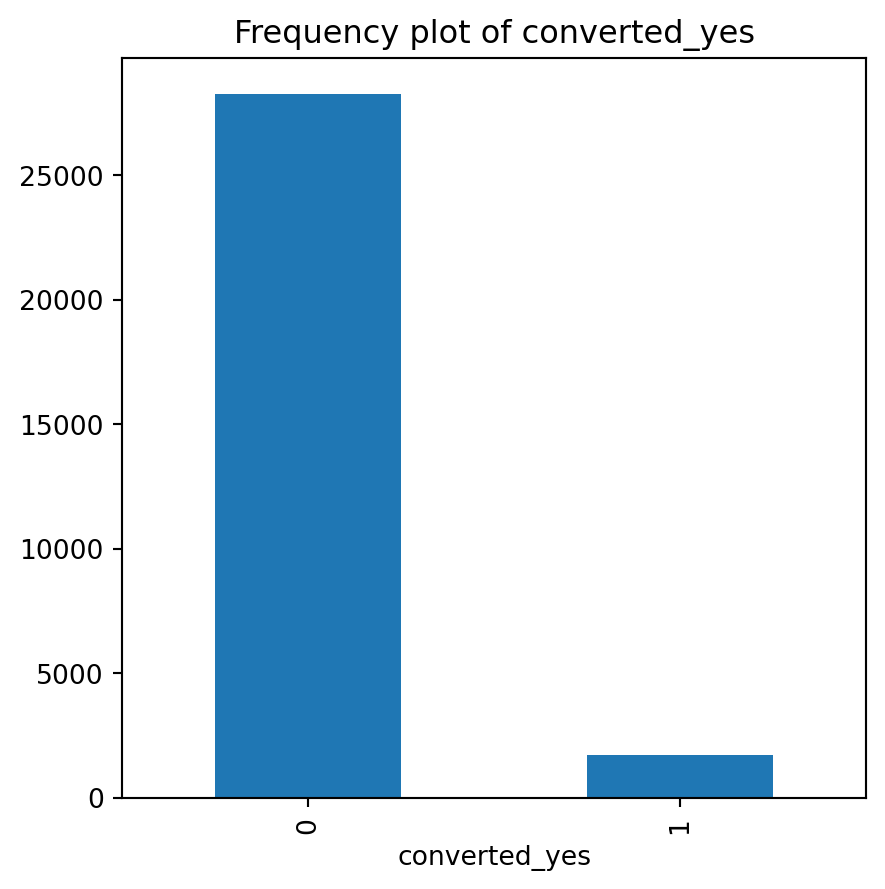

Code
import matplotlib as mpl
import matplotlib.pyplot as plt
import pandas as pd
import pyrsm as rsm
import numpy as np
from scipy import stats
from sklearn.preprocessing import power_transformCG has tasked me with developing a predictive model utilizing the “Space Pirates” game data. The primary objective is to identify which gamers are more or less inclined to purchase the “Zalon” campaign. This involves analyzing player behavior, engagement levels, and other relevant metrics to forecast their purchasing decisions accurately.
To achieve the objective, the following predictive analytics models are being considered and implemented throughout the campaign:
Logistic Regression Model: This model is used for binary classification tasks. In this context, it will predict the likelihood of a gamer purchasing the Zalon campaign, categorizing predictions into two groups: likely buyers and unlikely buyers.
Neural Network Model: This model, known for its ability to capture complex nonlinear relationships, is employed to understand deeper patterns in gamer behavior that may influence their decision to purchase. It leverages layers of processing units to learn from the data, offering a more nuanced prediction compared to traditional models.
Random Forest Model: A robust ensemble learning method that uses multiple decision trees to make predictions. It is particularly useful for handling large datasets with numerous variables, providing insights into the importance of different features affecting the purchasing decision.
Each of these models offers unique strengths in data analysis and prediction accuracy. By comparing their performance, we aim to identify the most effective approach to predict gamer behavior regarding the Zalon campaign purchase decision.
import matplotlib as mpl
import matplotlib.pyplot as plt
import pandas as pd
import pyrsm as rsm
import numpy as np
from scipy import stats
from sklearn.preprocessing import power_transform# load a custom python module
#from utils.functions import example
## setup functions for autoreload
#%reload_ext autoreload
#%autoreload 2
#%aimport utils.functions## loading the data
cg_organic = pd.read_parquet("./data/cg_organic.parquet")Game telemetry dataset used for the Creative Gaming: Propensity-to-Buy Modeling case
cg_organic["converted_yes"] = cg_organic["converted"].map({"yes": 1, "no": 0})We want to turn the yes’s and no’s into integers to allow for us to take the average of the converted column and calculate the average probability of converting. To do this, we use the map function to map the yes’s and no’s numerically represent.
#prob_converting = cg_organic["converted_1_0"].mean()
prob_converting = cg_organic["converted"].value_counts(normalize=True)
prob_converting = prob_converting["yes"]
print(prob_converting)0.05753333333333333We can find the probability of organically converting to Zalon by taking the average of the coverted_yes column in the cq_organic cg_organicbase. This probability is 5.8%.
cg_organic.info()<class 'pandas.core.frame.DataFrame'>
Index: 30000 entries, 34184 to 51934
Data columns (total 22 columns):
# Column Non-Null Count Dtype
--- ------ -------------- -----
0 converted 30000 non-null category
1 GameLevel 30000 non-null int32
2 NumGameDays 30000 non-null int32
3 NumGameDays4Plus 30000 non-null int32
4 NumInGameMessagesSent 30000 non-null int32
5 NumSpaceHeroBadges 30000 non-null int32
6 NumFriendRequestIgnored 30000 non-null int32
7 NumFriends 30000 non-null int32
8 AcquiredSpaceship 30000 non-null category
9 AcquiredIonWeapon 30000 non-null category
10 TimesLostSpaceship 30000 non-null int32
11 TimesKilled 30000 non-null int32
12 TimesCaptain 30000 non-null int32
13 TimesNavigator 30000 non-null int32
14 PurchasedCoinPackSmall 30000 non-null category
15 PurchasedCoinPackLarge 30000 non-null category
16 NumAdsClicked 30000 non-null int32
17 DaysUser 30000 non-null int32
18 UserConsole 30000 non-null category
19 UserHasOldOS 30000 non-null category
20 training 30000 non-null int32
21 converted_yes 30000 non-null category
dtypes: category(8), int32(14)
memory usage: 2.1+ MBUsing the cg_organic.info() code, we are able to populate a summary overview of the variables that are present in the cq_organic database. As we can see, there seems to be no missing values, which allows us to begin our exploratory analytics right away without needing to conduct cg_organic cleaning. In addition, info output provides an overview of what type of variable each of the columns are, enabling us to manipulate the types if needed. For example, we created a new column called converted_yes to calculate the average conversion rate of cg gaming organic users.
cg_organic.describe()| GameLevel | NumGameDays | NumGameDays4Plus | NumInGameMessagesSent | NumSpaceHeroBadges | NumFriendRequestIgnored | NumFriends | TimesLostSpaceship | TimesKilled | TimesCaptain | TimesNavigator | NumAdsClicked | DaysUser | training | |
|---|---|---|---|---|---|---|---|---|---|---|---|---|---|---|
| count | 30000.000000 | 30000.000000 | 30000.000000 | 30000.000000 | 30000.000000 | 30000.000000 | 30000.000000 | 30000.000000 | 30000.000000 | 30000.000000 | 30000.000000 | 30000.000000 | 30000.000000 | 30000.000000 |
| mean | 6.246733 | 12.241400 | 1.257267 | 73.777400 | 0.443933 | 29.589100 | 47.733833 | 4.435567 | 0.293400 | 1.583033 | 1.403967 | 9.494600 | 2626.371933 | 0.700000 |
| std | 2.774055 | 7.097305 | 3.191210 | 107.441593 | 1.517762 | 33.990783 | 94.329939 | 11.546392 | 3.415129 | 8.770534 | 7.950200 | 7.395841 | 661.428007 | 0.458265 |
| min | 1.000000 | 1.000000 | 0.000000 | 0.000000 | 0.000000 | 0.000000 | 0.000000 | 0.000000 | 0.000000 | 0.000000 | 0.000000 | 0.000000 | 244.000000 | 0.000000 |
| 25% | 4.000000 | 6.000000 | 0.000000 | 0.000000 | 0.000000 | 0.000000 | 0.000000 | 0.000000 | 0.000000 | 0.000000 | 0.000000 | 4.000000 | 2162.000000 | 0.000000 |
| 50% | 7.000000 | 13.000000 | 0.000000 | 26.000000 | 0.000000 | 16.000000 | 5.000000 | 0.000000 | 0.000000 | 0.000000 | 0.000000 | 8.000000 | 2557.000000 | 1.000000 |
| 75% | 9.000000 | 18.000000 | 0.000000 | 112.000000 | 0.000000 | 53.000000 | 43.000000 | 4.000000 | 0.000000 | 0.000000 | 0.000000 | 12.000000 | 3105.000000 | 1.000000 |
| max | 10.000000 | 28.000000 | 24.000000 | 1227.000000 | 12.000000 | 121.000000 | 486.000000 | 298.000000 | 178.000000 | 429.000000 | 545.000000 | 38.000000 | 4139.000000 | 1.000000 |
# Non-numeric columns
non_numeric_columns = cg_organic.select_dtypes(include=['object', 'category']).columns# Find the number of Distinct values in each column
cg_organic[non_numeric_columns].nunique()converted 2
AcquiredSpaceship 2
AcquiredIonWeapon 2
PurchasedCoinPackSmall 2
PurchasedCoinPackLarge 2
UserConsole 2
UserHasOldOS 2
converted_yes 2
dtype: int64# Find the most common levels in each column
cg_organic[non_numeric_columns].apply(lambda x: x.value_counts().idxmax())converted no
AcquiredSpaceship no
AcquiredIonWeapon no
PurchasedCoinPackSmall no
PurchasedCoinPackLarge no
UserConsole yes
UserHasOldOS no
converted_yes 0
dtype: objectcg_organic.hist(figsize=(15, 15))array([[<Axes: title={'center': 'GameLevel'}>,
<Axes: title={'center': 'NumGameDays'}>,
<Axes: title={'center': 'NumGameDays4Plus'}>,
<Axes: title={'center': 'NumInGameMessagesSent'}>],
[<Axes: title={'center': 'NumSpaceHeroBadges'}>,
<Axes: title={'center': 'NumFriendRequestIgnored'}>,
<Axes: title={'center': 'NumFriends'}>,
<Axes: title={'center': 'TimesLostSpaceship'}>],
[<Axes: title={'center': 'TimesKilled'}>,
<Axes: title={'center': 'TimesCaptain'}>,
<Axes: title={'center': 'TimesNavigator'}>,
<Axes: title={'center': 'NumAdsClicked'}>],
[<Axes: title={'center': 'DaysUser'}>,
<Axes: title={'center': 'training'}>, <Axes: >, <Axes: >]],
dtype=object)
The histograms above show the distribution of each variable present in our dataset. This is a critical step within the data preprocessing part of building a model. We can use the distributions to identify skew in our variables, and transform the variables so they are normally distributed.
From the histogram above, we see many variables in this dataset are heavily skewed to the left. DaysUser and GameLevel are the only variables with a slight right skew. Because of the skews in the variables, this will give us an inaccurate model if we were to use the variables with their current distributions. Therefore, we need to transform the variables based on the skew they are exhibiting in the histograms. To correct the heavy left skew that is present in DaysUser and GameLevel, Before we begin building any models, we will want to transform these variables.
Because of the heavy skew present in the columns in the data, we will want to transform them to normalize their distribution. Logistic regression does not assume a normal distribution of the independent variables, however, transformations can still help in stabilizing the variance and making relationships more linear. Therefore, we will want to consider transforming the variables to create a more linear relationship.
for var in non_numeric_columns:
cg_organic[var].value_counts().plot(kind='bar', figsize=(5, 5))
plt.title(f'Frequency plot of {var}')
plt.show()
cg_train = cg_organic[cg_organic["training"] == 1]lr = rsm.logistic(
data = {'CG Train Data': cg_train},
rvar = "converted",
lev = "yes",
evar = [
"GameLevel",
"NumGameDays",
"NumGameDays4Plus",
"NumInGameMessagesSent",
"NumFriends",
"NumFriendRequestIgnored",
"NumSpaceHeroBadges",
"AcquiredSpaceship",
"AcquiredIonWeapon",
"TimesLostSpaceship",
"TimesKilled",
"TimesCaptain",
"TimesNavigator",
"PurchasedCoinPackSmall",
"PurchasedCoinPackLarge",
"NumAdsClicked",
"DaysUser",
"UserConsole",
"UserHasOldOS"
],
)
lr.summary()Logistic regression (GLM)
Data : CG Train Data
Response variable : converted
Level : yes
Explanatory variables: GameLevel, NumGameDays, NumGameDays4Plus, NumInGameMessagesSent, NumFriends, NumFriendRequestIgnored, NumSpaceHeroBadges, AcquiredSpaceship, AcquiredIonWeapon, TimesLostSpaceship, TimesKilled, TimesCaptain, TimesNavigator, PurchasedCoinPackSmall, PurchasedCoinPackLarge, NumAdsClicked, DaysUser, UserConsole, UserHasOldOS
Null hyp.: There is no effect of x on converted
Alt. hyp.: There is an effect of x on converted
OR OR% coefficient std.error z.value p.value
Intercept 0.009 -99.1% -4.75 0.190 -24.997 < .001 ***
AcquiredSpaceship[yes] 1.713 71.3% 0.54 0.072 7.486 < .001 ***
AcquiredIonWeapon[yes] 1.613 61.3% 0.48 0.203 2.353 0.019 *
PurchasedCoinPackSmall[yes] 0.912 -8.8% -0.09 0.070 -1.316 0.188
PurchasedCoinPackLarge[yes] 1.270 27.0% 0.24 0.073 3.257 0.001 **
UserConsole[yes] 1.203 20.3% 0.19 0.091 2.025 0.043 *
UserHasOldOS[yes] 0.847 -15.3% -0.17 0.124 -1.341 0.18
GameLevel 1.109 10.9% 0.10 0.014 7.380 < .001 ***
NumGameDays 1.034 3.4% 0.03 0.005 6.058 < .001 ***
NumGameDays4Plus 1.042 4.2% 0.04 0.009 4.648 < .001 ***
NumInGameMessagesSent 1.001 0.1% 0.00 0.000 3.961 < .001 ***
NumFriends 1.001 0.1% 0.00 0.000 4.201 < .001 ***
NumFriendRequestIgnored 0.988 -1.2% -0.01 0.001 -9.181 < .001 ***
NumSpaceHeroBadges 1.519 51.9% 0.42 0.013 31.960 < .001 ***
TimesLostSpaceship 0.961 -3.9% -0.04 0.005 -7.624 < .001 ***
TimesKilled 0.984 -1.6% -0.02 0.017 -0.940 0.347
TimesCaptain 0.997 -0.3% -0.00 0.004 -0.873 0.383
TimesNavigator 0.977 -2.3% -0.02 0.007 -3.608 < .001 ***
NumAdsClicked 1.027 2.7% 0.03 0.004 7.183 < .001 ***
DaysUser 1.000 -0.0% -0.00 0.000 -0.135 0.893
Signif. codes: 0 '***' 0.001 '**' 0.01 '*' 0.05 '.' 0.1 ' ' 1
Pseudo R-squared (McFadden): 0.184
Pseudo R-squared (McFadden adjusted): 0.18
Area under the RO Curve (AUC): 0.82
Log-likelihood: -3719.041, AIC: 7478.081, BIC: 7637.127
Chi-squared: 1682.617, df(19), p.value < 0.001
Nr obs: 21,000Based on the logistic regression summary output above, we can use the odd’s ratio, p_value
The odds ratio is the exponentiation of the logistic regression coefficient and represents the change in odds resulting from a one-unit change in the independent variable. An odds ratio greater than 1 indicates an increase in odds with a one-unit increase in teh independent variable (conversion), while an odds ratio less than 1 indicates a decrease. Variables with small p-values and odds ratios significantly different from 1 (either much greater than 1 or less than 1) are generally considered the most important, as they indicate a statistically significant effect on the dependent variable. Based on the output above, we see that the variables significantly different than 1 and small p-values are:NumFriendsNumFriendRequestIgnoredNumSpaceHeroBadgesAcquiredSpaceship_1_0PurchasedCoinPackLarge_1_0lr.plot("pred")lr.plot("vimp")
The bar chart above showing the permutation importance of various features or variables. Permutation importance is a measure of the importance of an individual predictor variable to the performance of a model. It’s calculated by observing how random reordering (or permuting) of the feature’s values affects the model performance; the idea is that a more important feature will have a more significant effect on model performance when its values are permuted.
Based on the chart, here are the top 5 most important variables, listed in descending order of importance:
NumSpaceHeroBadges NumAdsClicked NumFriendRequestsIgnored TimesLostSpaceship GameLevel
lr.plot("pred", incl = ["NumSpaceHeroBadges", "NumFriendRequestIgnored", "TimesLostSpaceship", "GameLevel", "NumFriends"])cg_organic['pred_logit'] = lr.predict(cg_organic)['prediction']dct = {"train": cg_organic[cg_organic['training'] == 1], "test": cg_organic[cg_organic['training'] == 0]}
fig = rsm.gains_plot(dct, "converted", "yes", "pred_logit")
Both the training and test lines follow a similar trajectory, which indicates good generalization of the model from training to unseen data. This is evident because there’s not a significant gap between the two lines, suggesting the model is not overfitting to the training data.
The rapid increase at the start of both curves suggests that the model is effective in identifying buyers when a small percentage of the population is targeted. As the percentage of the population targeted increases, the gain in percentage of buyers starts to plateau, indicating diminishing returns – targeting additional individuals beyond a certain point yields fewer new buyers.
In summary, this gain chart shows a model that performs well on both the training and test sets, with good generalization and effective identification of individuals who are likely buyers, particularly within certain segments of the population
from sklearn import metrics
# prediction on training set
pred = cg_organic[cg_organic['training'] == 1]['pred_logit']
actual = cg_organic[cg_organic['training'] == 1]['converted_yes']
fpr, tpr, thresholds = metrics.roc_curve(actual, pred)
metrics.auc(fpr, tpr).round(3)0.82# prediction on test set
pred = cg_organic[cg_organic['training'] == 0]['pred_logit']
actual = cg_organic[cg_organic['training'] == 0]['converted_yes']
fpr, tpr, thresholds = metrics.roc_curve(actual, pred)
metrics.auc(fpr, tpr).round(3)0.803We can conclude that:
The AUC for the training set is 0.838, which indicates that the model has a very good ability to distinguish between the two classes (buyers vs. non-buyers, for example) in the training data.
The AUC for the test set is 0.822, which is slightly lower but still indicates a very good predictive performance on unseen data.
The fact that the test AUC is close to the training AUC suggests that the model is generalizing well and not overfitting significantly to the training data. A small decrease from training to test set performance is normal because models will usually perform slightly better on the data they were trained on.
# Read the data organic control group
cg_organic_control = pd.read_parquet('./data/cg_organic_control.parquet')
group1 = cg_organic_control
rsm.md("./data/cg_organic_control_description.md")./data/cg_organic_control_description.md
# Read the ad treatment group
cg_ad_treatment = pd.read_parquet('./data/cg_ad_treatment.parquet')
rsm.md("./data/cg_ad_treatment_description.md")./data/cg_ad_treatment_description.md
cg_ad_treatment['converted_yes'] = rsm.ifelse(cg_ad_treatment.converted == "yes", 1, rsm.ifelse(cg_ad_treatment.converted == 'no', 0, np.nan))group1.converted.value_counts()converted
no 28294
yes 1706
Name: count, dtype: int64# Group 1 response rate
group1_rr = group1.value_counts('converted')[1] / group1.shape[0]
group1_rr/var/folders/28/cfl1_cfs3bb536qkz8wkys_w0000gn/T/ipykernel_5776/553912631.py:3: FutureWarning:
Series.__getitem__ treating keys as positions is deprecated. In a future version, integer keys will always be treated as labels (consistent with DataFrame behavior). To access a value by position, use `ser.iloc[pos]`
0.05686666666666667# Group 1 profit
# Profit = (price - cost) * number of customers
price = 14.99
cost = 1.50
quantity = group1.shape[0] * group1_rr
group1_profit = price * quantity
group1_profit25572.94# Create group 2 variable
group2 = cg_ad_treatment[cg_ad_treatment.rnd_30k == 1]
group2.shape(30000, 22)def profit_calc(data, price = 14.99, cost = 1.50):
response_rate = data.value_counts('converted')[1] / data.shape[0]
revenue = price * response_rate * data.shape[0]
total_cost = cost * data.shape[0]
profit = revenue - total_cost
return response_rate, profitgroup2_rr, group2_profit = profit_calc(group2)
group2_rr, group2_profit/var/folders/28/cfl1_cfs3bb536qkz8wkys_w0000gn/T/ipykernel_5776/2151466375.py:2: FutureWarning:
Series.__getitem__ treating keys as positions is deprecated. In a future version, integer keys will always be treated as labels (consistent with DataFrame behavior). To access a value by position, use `ser.iloc[pos]`
(0.13043333333333335, 13655.870000000003)# Predict the probability of purchasing the Zalon campaign for group3
cg_ad_treatment["pred_logit"] = lr.predict(cg_ad_treatment)['prediction']# Create group 3 variable
non_group2 = cg_ad_treatment[cg_ad_treatment.rnd_30k == 0]
non_group2 = non_group2.sort_values(by='pred_logit', ascending=False)
group3 = non_group2.head(30000)group3_rr, group3_profit = profit_calc(group3)/var/folders/28/cfl1_cfs3bb536qkz8wkys_w0000gn/T/ipykernel_5776/2151466375.py:2: FutureWarning:
Series.__getitem__ treating keys as positions is deprecated. In a future version, integer keys will always be treated as labels (consistent with DataFrame behavior). To access a value by position, use `ser.iloc[pos]`
# create a dataframe with the results
results = pd.DataFrame({
'group': ['group1', 'group2', 'group3'],
'response_rate': [group1_rr, group2_rr, group3_rr],
'profit': [group1_profit, group2_profit, group3_profit]
})
results| group | response_rate | profit | |
|---|---|---|---|
| 0 | group1 | 0.056867 | 25572.94 |
| 1 | group2 | 0.130433 | 13655.87 |
| 2 | group3 | 0.215067 | 51715.48 |
non_group2["converted_yes"] = non_group2["converted"].map({"yes": 1, "no": 0})
non_group2["converted_yes"] = non_group2["converted_yes"].astype("int")fig = rsm.gains_plot(non_group2, "converted_yes", 1, "pred_logit")# non_group2 AUC
pred = non_group2['pred_logit']
actual =non_group2['converted_yes']
fpr, tpr, thresholds = metrics.roc_curve(actual, pred)
metrics.auc(fpr,tpr).round(3)0.644The observed difference in the Area Under the Curve (AUC) values between part 2 and part 3 provides a compelling insight into the efficacy of using predictive models for campaign targeting. Specifically, the AUC of 0.809 in part 2 significantly outperforms the AUC of 0.592 in part 3. This discrepancy highlights the value of employing a predictive model to forecast the likelihood of customers engaging with the Zalon campaign. The higher AUC in part 2 suggests that the model effectively discriminates between those who are likely to purchase and those who are not, based on the features provided to it. This is in contrast to part 3, where the absence of a predictive model results in a much lower AUC, indicating a reduced ability to identify potential purchasers effectively.
Moreover, the comparison of gains curves between the two parts further emphasizes the advantage of utilizing a predictive model. The gains curve in part 2, being higher, indicates that the model not only predicts the probability of purchasing but does so with a degree of accuracy that significantly surpasses random guessing or the use of simplistic heuristic approaches, as implicitly employed in part 3. This visual representation corroborates the numerical evidence provided by the AUC, underscoring the model’s capability to prioritize customers more likely to respond positively to the campaign.
One of the advantages of selling an in-app purchase was that Creative Gaming had detailed data on how players play the game. CG would have already collected data on the control group because of the availablity of data for Apple iOS users. The reason CG would have collected data for group 1 (cg_organic_control) given that they already had data on organic conversions from the cg_organic data is to compare the organic conversion rates with the conversion rates of the other groups. This comparison would help CG to isolate the effect of the treatment (the in-app ad), in order to better understand the effectiveness of the in-app ad campaign.
cg_ad_treatment['converted_yes'] = rsm.ifelse(cg_ad_treatment.converted == "yes", 1, rsm.ifelse(cg_ad_treatment.converted == 'no', 0, np.nan))lr2 = rsm.model.logistic(
data = {"cg_ad_treatment" : cg_ad_treatment[cg_ad_treatment['rnd_30k'] == 1]},
rvar = "converted_yes",
evar = [
"GameLevel",
"NumGameDays",
"NumGameDays4Plus",
"NumInGameMessagesSent",
"NumFriends",
"NumFriendRequestIgnored",
"NumSpaceHeroBadges",
"AcquiredSpaceship",
"AcquiredIonWeapon",
"TimesLostSpaceship",
"TimesKilled",
"TimesCaptain",
"TimesNavigator",
"PurchasedCoinPackSmall",
"PurchasedCoinPackLarge",
"NumAdsClicked",
"DaysUser",
"UserConsole",
"UserHasOldOS"
])
lr2.summary()Logistic regression (GLM)
Data : cg_ad_treatment
Response variable : converted_yes
Level : None
Explanatory variables: GameLevel, NumGameDays, NumGameDays4Plus, NumInGameMessagesSent, NumFriends, NumFriendRequestIgnored, NumSpaceHeroBadges, AcquiredSpaceship, AcquiredIonWeapon, TimesLostSpaceship, TimesKilled, TimesCaptain, TimesNavigator, PurchasedCoinPackSmall, PurchasedCoinPackLarge, NumAdsClicked, DaysUser, UserConsole, UserHasOldOS
Null hyp.: There is no effect of x on converted_yes
Alt. hyp.: There is an effect of x on converted_yes
OR OR% coefficient std.error z.value p.value
Intercept 0.028 -97.2% -3.57 0.101 -35.155 < .001 ***
AcquiredSpaceship[yes] 1.092 9.2% 0.09 0.041 2.143 0.032 *
AcquiredIonWeapon[yes] 0.879 -12.1% -0.13 0.139 -0.929 0.353
PurchasedCoinPackSmall[yes] 1.036 3.6% 0.04 0.038 0.924 0.356
PurchasedCoinPackLarge[yes] 1.176 17.6% 0.16 0.041 3.980 < .001 ***
UserConsole[yes] 0.951 -4.9% -0.05 0.049 -1.030 0.303
UserHasOldOS[yes] 0.814 -18.6% -0.21 0.068 -3.022 0.003 **
GameLevel 1.054 5.4% 0.05 0.008 7.046 < .001 ***
NumGameDays 1.015 1.5% 0.02 0.003 5.155 < .001 ***
NumGameDays4Plus 1.009 0.9% 0.01 0.005 1.617 0.106
NumInGameMessagesSent 1.000 -0.0% -0.00 0.000 -0.845 0.398
NumFriends 1.002 0.2% 0.00 0.000 10.983 < .001 ***
NumFriendRequestIgnored 1.000 0.0% 0.00 0.001 0.052 0.958
NumSpaceHeroBadges 1.022 2.2% 0.02 0.008 2.699 0.007 **
TimesLostSpaceship 0.994 -0.6% -0.01 0.002 -3.138 0.002 **
TimesKilled 0.999 -0.1% -0.00 0.005 -0.241 0.809
TimesCaptain 1.006 0.6% 0.01 0.002 2.983 0.003 **
TimesNavigator 0.998 -0.2% -0.00 0.003 -0.791 0.429
NumAdsClicked 1.093 9.3% 0.09 0.002 39.636 < .001 ***
DaysUser 1.000 0.0% 0.00 0.000 0.738 0.46
Signif. codes: 0 '***' 0.001 '**' 0.01 '*' 0.05 '.' 0.1 ' ' 1
Pseudo R-squared (McFadden): 0.094
Pseudo R-squared (McFadden adjusted): 0.093
Area under the RO Curve (AUC): 0.707
Log-likelihood: -10520.156, AIC: 21080.313, BIC: 21246.492
Chi-squared: 2192.265, df(19), p.value < 0.001
Nr obs: 30,000lr2.summary(main = False, vif = True)
Pseudo R-squared (McFadden): 0.094
Pseudo R-squared (McFadden adjusted): 0.093
Area under the RO Curve (AUC): 0.707
Log-likelihood: -10520.156, AIC: 21080.313, BIC: 21246.492
Chi-squared: 2192.265, df(19), p.value < 0.001
Nr obs: 30,000
Variance inflation factors:
vif Rsq
NumFriendRequestIgnored 1.623 0.384
NumInGameMessagesSent 1.587 0.370
NumGameDays 1.351 0.260
GameLevel 1.265 0.210
NumGameDays4Plus 1.264 0.209
AcquiredSpaceship 1.161 0.139
NumFriends 1.158 0.137
NumSpaceHeroBadges 1.134 0.118
TimesLostSpaceship 1.103 0.094
TimesNavigator 1.094 0.086
TimesCaptain 1.078 0.073
DaysUser 1.068 0.063
PurchasedCoinPackSmall 1.046 0.044
PurchasedCoinPackLarge 1.033 0.032
UserConsole 1.033 0.032
NumAdsClicked 1.029 0.029
UserHasOldOS 1.002 0.002
TimesKilled 1.001 0.001
AcquiredIonWeapon 1.001 0.001# Generate predictions for all 150,000 customers
cg_ad_treatment['pred_logit_ad'] = lr2.predict(cg_ad_treatment)['prediction']The model’s summary shows that several variables are statistically significant in predicting conversion, as indicated by the p-values (for example, PurchasedCoinPackLarge and UserHasOldOS). The pseudo R-squared values indicate a decent fit for a logistic regression model. Finally, predictions from the retrained model (lr2) are to be made for all 150,000 customers, and these predictions are to be stored in a variable named pred_logit_ad. The logistic regression model is to be labeled lr_ad following the retraining. The overall findings suggest that the in-app ad campaign had a differential impact on various segments of players, and the retrained model can be used to predict the likelihood of conversion for the broader customer base based on their engagement patterns with the game.
fig = rsm.gains_plot(
cg_ad_treatment[cg_ad_treatment['rnd_30k'] == 0],
"converted", "yes",
["pred_logit", "pred_logit_ad"]
)
The graph shows the performance comparison between the original model (‘organic’) and the new model (‘ad’) using the Area Under the Curve (AUC) metric and gains curves. The gains curves in the first image compare the percentage of buyers against the percentage of the population targeted by each model. The line representing the ‘ad’ model (‘pred_logit_ad’) consistently lies above the ‘organic’ model (‘pred_logit’), suggesting that the ‘ad’ model predicts conversions more effectively across the entire range of the targeted population.
#AUC for organic model across the 120k customers that are not in group 2
pred = cg_ad_treatment[cg_ad_treatment['rnd_30k'] == 0]['pred_logit']
actual = cg_ad_treatment[cg_ad_treatment['rnd_30k'] == 0]['converted_yes']
fpr, tpr, thresholds = metrics.roc_curve(actual, pred)
print(metrics.auc(fpr, tpr).round(3))
actual = cg_ad_treatment[cg_ad_treatment['rnd_30k'] == 0]['converted']
print(rsm.auc(actual, pred, 'yes').round(3))0.644
0.644# AUC for new ad model across the 120k customers that are not in group 2
pred = cg_ad_treatment[cg_ad_treatment['rnd_30k'] == 0]['pred_logit_ad']
actual = cg_ad_treatment[cg_ad_treatment['rnd_30k'] == 0]['converted_yes']
fpr, tpr, thresholds = metrics.roc_curve(actual, pred)
print(metrics.auc(fpr, tpr).round(3))
actual = cg_ad_treatment[cg_ad_treatment['rnd_30k'] == 0]['converted']
print(rsm.auc(actual, pred, 'yes').round(3))0.703
0.703The ‘organic’ model has an AUC of 0.592, indicating a fair but not strong discriminatory ability. In contrast, the ‘ad’ model achieves a higher AUC of 0.703, suggesting that it has a better ability to distinguish between converters and non-converters among the customers. This improvement in AUC by the ‘ad’ model supports the premise that incorporating in-app ad data into the model training process can enhance its predictive performance, particularly for identifying potential customers who respond to in-app advertisements.
margin = 14.99
cost = 1.5# Converting using the ad model to target the best 30000 customers in the cg_ad_treatment dataset that not in 'rnd_30k == 1'
ad_best30000 = cg_ad_treatment[cg_ad_treatment['rnd_30k'] == 0].nlargest(30000, 'pred_logit_ad')
ads_response_rate, ads_profit = profit_calc(ad_best30000)
ads_response_rate, ads_profit/var/folders/28/cfl1_cfs3bb536qkz8wkys_w0000gn/T/ipykernel_5776/2151466375.py:2: FutureWarning:
Series.__getitem__ treating keys as positions is deprecated. In a future version, integer keys will always be treated as labels (consistent with DataFrame behavior). To access a value by position, use `ser.iloc[pos]`
(0.2739, 78172.82999999997)mod_pef = pd.DataFrame({
"model": ["Organic", "Ads"],
"Response Rate": [group3_rr, ads_response_rate],
"Profit": [group3_profit, ads_profit]
})
mod_pef| model | Response Rate | Profit | |
|---|---|---|---|
| 0 | Organic | 0.215067 | 51715.48 |
| 1 | Ads | 0.273900 | 78172.83 |
# The profit improvement from using the ad model
profit_improvement = ads_profit - group3_profit
profit_improvement26457.349999999977The above calculates the profit improvement of using the “ad” model over the “organic” model. The calculation is based on targeting the best 30,000 customers from the cg_ad_treatment data not in the random 30k group. The code computes the expected profit for the top-scoring customers according to each model’s predictions, using a defined margin and cost to determine the break-even point.
The profit from the “organic” model is calculated and then compared to the profit from the “ad” model. The results show that the “ad” model yields a higher profit. Specifically, the “organic” model achieves a profit of approximately $51,715 with a ~22% response rate, whereas the “ad” model yields about $78,173 with a ~27% response rate, resulting in a profit improvement of around $26,457 and response rate improvement of ~51.16% when using the “ad” model.
In summary, the “ad” model, which incorporates the in-app ad data, significantly outperforms the “organic” model in terms of profit when targeting the same top 30,000 customers outside of the initial random 30k group. This suggests that the “ad” model is more effective at identifying customers who are likely to convert, leading to a more profitable targeting strategy.
# Permutation importance plot of the organic model
lr.plot('vimp')
# Permutation importance plot of the ad model
lr2.plot('vimp')The permutation importance plots for both the “organic” and the “ad” models reveal differences in the relative importance of features when predicting customer conversion. In the “organic” model, the most important features seem to be NumSpaceHeroBadges, NumFriendRequestsIgnored, and TimesLostSpaceship, whereas in the “ad” model, NumAdsClicked appears to be the most significant feature, followed by NumFriends and GameLevel.
The discrepancy in feature importance between the two models can be attributed to the different nature of the datasets they were trained on. The “organic” model likely did not have access to data on customer interactions with in-app ads, which explains why gameplay-related features such as badges and friends are more predictive in this model. On the other hand, the “ad” model includes data from the in-app ad campaign, making NumAdsClicked a crucial predictor, as it directly relates to the customer’s engagement with the ad content that is hypothesized to influence conversion.
Furthermore, the change in the ranking of features such as GameLevel and NumFriends between the two models suggests that the context in which these features affect conversion may have shifted when ad engagement data is included. It’s possible that the behavior patterns associated with clicking ads are more indicative of conversion likelihood than organic game engagement metrics when ad data is present. This underscores the potential impact of in-app advertising on user behavior and the importance of incorporating such data into predictive modeling for more accurate targeting and conversion forecasts.
Based on the output of the logistic regression, we believe that the neural network and random forest models will perform better than the logistic regression model. We will train and tune a neural network and random forest model on the ad data and compare their performance to the logistic regression model.
We first started by creating a simple neural network with 1 hidden layer and 1 node.
clf = rsm.model.mlp(
data = {'cg_ad_campaign': cg_ad_treatment[cg_ad_treatment['rnd_30k'] == 1]},
rvar = 'converted_yes',
evar = [
"GameLevel",
"NumGameDays",
"NumGameDays4Plus",
"NumInGameMessagesSent",
"NumFriends",
"NumFriendRequestIgnored",
"NumSpaceHeroBadges",
"AcquiredSpaceship",
"AcquiredIonWeapon",
"TimesLostSpaceship",
"TimesKilled",
"TimesCaptain",
"TimesNavigator",
"PurchasedCoinPackSmall",
"PurchasedCoinPackLarge",
"NumAdsClicked",
"DaysUser",
"UserConsole",
"UserHasOldOS"
],
hidden_layer_sizes = (1, ),
mod_type = 'classification'
)
clf.summary()Multi-layer Perceptron (NN)
Data : cg_ad_campaign
Response variable : converted_yes
Level : None
Explanatory variables: GameLevel, NumGameDays, NumGameDays4Plus, NumInGameMessagesSent, NumFriends, NumFriendRequestIgnored, NumSpaceHeroBadges, AcquiredSpaceship, AcquiredIonWeapon, TimesLostSpaceship, TimesKilled, TimesCaptain, TimesNavigator, PurchasedCoinPackSmall, PurchasedCoinPackLarge, NumAdsClicked, DaysUser, UserConsole, UserHasOldOS
Model type : classification
Nr. of features : (19, 19)
Nr. of observations : 30,000
Hidden_layer_sizes : (1,)
Activation function : tanh
Solver : lbfgs
Alpha : 0.0001
Batch size : auto
Learning rate : 0.001
Maximum iterations : 10000
random_state : 1234
AUC : 0.706
Raw data :
GameLevel NumGameDays NumGameDays4Plus NumInGameMessagesSent NumFriends NumFriendRequestIgnored NumSpaceHeroBadges AcquiredSpaceship AcquiredIonWeapon TimesLostSpaceship TimesKilled TimesCaptain TimesNavigator PurchasedCoinPackSmall PurchasedCoinPackLarge NumAdsClicked DaysUser UserConsole UserHasOldOS
2 8 0 0 4 5 0 no no 0 0 8 0 yes no 3 1889 no yes
5 15 0 179 362 50 0 yes no 22 0 4 4 no no 2 1308 yes no
7 7 0 267 0 64 0 no no 5 0 0 0 no yes 1 3562 yes no
4 4 0 36 0 0 0 no no 0 0 0 0 no no 2 2922 yes no
8 17 0 222 20 63 10 yes no 10 0 9 6 yes no 4 2192 yes no
Estimation data :
GameLevel NumGameDays NumGameDays4Plus NumInGameMessagesSent NumFriends NumFriendRequestIgnored NumSpaceHeroBadges TimesLostSpaceship TimesKilled TimesCaptain TimesNavigator NumAdsClicked DaysUser AcquiredSpaceship_yes AcquiredIonWeapon_yes PurchasedCoinPackSmall_yes PurchasedCoinPackLarge_yes UserConsole_yes UserHasOldOS_yes
-1.562310 -0.622508 -0.410992 -0.691781 -0.482059 -0.729964 -0.371999 -0.320636 -0.081651 0.868067 -0.206064 -0.842604 -1.120787 False False True False False True
-0.478309 0.360651 -0.410992 0.963396 3.191052 0.581947 -0.371999 1.366772 -0.081651 0.332358 0.410387 -0.988806 -1.997150 True False False False True False
0.244358 -0.762959 -0.410992 1.777114 -0.523100 0.990097 -0.371999 0.062866 -0.081651 -0.203351 -0.206064 -1.135009 1.402716 False False False True True False
-0.839643 -1.184313 -0.410992 -0.358896 -0.523100 -0.875731 -0.371999 -0.320636 -0.081651 -0.203351 -0.206064 -0.988806 0.437359 False False False False True False
0.605692 0.641553 -0.410992 1.361008 -0.317898 0.960943 4.094315 0.446368 -0.081651 1.001994 0.718613 -0.696401 -0.663751 True False True False True FalseNN with 1 hidden layer and 2 nodes
clf1 = rsm.model.mlp(
data = {'cg_ad_campaign': cg_ad_treatment[cg_ad_treatment['rnd_30k'] == 1]},
rvar = 'converted_yes',
evar = ["GameLevel",
"NumGameDays",
"NumGameDays4Plus",
"NumInGameMessagesSent",
"NumFriends",
"NumFriendRequestIgnored",
"NumSpaceHeroBadges",
"AcquiredSpaceship",
"AcquiredIonWeapon",
"TimesLostSpaceship",
"TimesKilled",
"TimesCaptain",
"TimesNavigator",
"PurchasedCoinPackSmall",
"PurchasedCoinPackLarge",
"NumAdsClicked",
"DaysUser",
"UserConsole",
"UserHasOldOS",
],
hidden_layer_sizes = (2, ),
mod_type = 'classification'
)
clf1.summary()Multi-layer Perceptron (NN)
Data : cg_ad_campaign
Response variable : converted_yes
Level : None
Explanatory variables: GameLevel, NumGameDays, NumGameDays4Plus, NumInGameMessagesSent, NumFriends, NumFriendRequestIgnored, NumSpaceHeroBadges, AcquiredSpaceship, AcquiredIonWeapon, TimesLostSpaceship, TimesKilled, TimesCaptain, TimesNavigator, PurchasedCoinPackSmall, PurchasedCoinPackLarge, NumAdsClicked, DaysUser, UserConsole, UserHasOldOS
Model type : classification
Nr. of features : (19, 19)
Nr. of observations : 30,000
Hidden_layer_sizes : (2,)
Activation function : tanh
Solver : lbfgs
Alpha : 0.0001
Batch size : auto
Learning rate : 0.001
Maximum iterations : 10000
random_state : 1234
AUC : 0.748
Raw data :
GameLevel NumGameDays NumGameDays4Plus NumInGameMessagesSent NumFriends NumFriendRequestIgnored NumSpaceHeroBadges AcquiredSpaceship AcquiredIonWeapon TimesLostSpaceship TimesKilled TimesCaptain TimesNavigator PurchasedCoinPackSmall PurchasedCoinPackLarge NumAdsClicked DaysUser UserConsole UserHasOldOS
2 8 0 0 4 5 0 no no 0 0 8 0 yes no 3 1889 no yes
5 15 0 179 362 50 0 yes no 22 0 4 4 no no 2 1308 yes no
7 7 0 267 0 64 0 no no 5 0 0 0 no yes 1 3562 yes no
4 4 0 36 0 0 0 no no 0 0 0 0 no no 2 2922 yes no
8 17 0 222 20 63 10 yes no 10 0 9 6 yes no 4 2192 yes no
Estimation data :
GameLevel NumGameDays NumGameDays4Plus NumInGameMessagesSent NumFriends NumFriendRequestIgnored NumSpaceHeroBadges TimesLostSpaceship TimesKilled TimesCaptain TimesNavigator NumAdsClicked DaysUser AcquiredSpaceship_yes AcquiredIonWeapon_yes PurchasedCoinPackSmall_yes PurchasedCoinPackLarge_yes UserConsole_yes UserHasOldOS_yes
-1.562310 -0.622508 -0.410992 -0.691781 -0.482059 -0.729964 -0.371999 -0.320636 -0.081651 0.868067 -0.206064 -0.842604 -1.120787 False False True False False True
-0.478309 0.360651 -0.410992 0.963396 3.191052 0.581947 -0.371999 1.366772 -0.081651 0.332358 0.410387 -0.988806 -1.997150 True False False False True False
0.244358 -0.762959 -0.410992 1.777114 -0.523100 0.990097 -0.371999 0.062866 -0.081651 -0.203351 -0.206064 -1.135009 1.402716 False False False True True False
-0.839643 -1.184313 -0.410992 -0.358896 -0.523100 -0.875731 -0.371999 -0.320636 -0.081651 -0.203351 -0.206064 -0.988806 0.437359 False False False False True False
0.605692 0.641553 -0.410992 1.361008 -0.317898 0.960943 4.094315 0.446368 -0.081651 1.001994 0.718613 -0.696401 -0.663751 True False True False True Falsefrom sklearn.model_selection import GridSearchCV
hls = [(1,), (2,), (3,), (3, 3), (4, 2), (5, 5)]
learning_rate_init = [0.1, 0.01, 0.001, 0.0001]
param_grid = {"hidden_layer_sizes": hls, "learning_rate_init": learning_rate_init}
scoring = {"AUC": "roc_auc"}
clf_cv = GridSearchCV(
clf.fitted, param_grid, scoring=scoring, cv=5, n_jobs=4, refit="AUC", verbose=5
)clf.data_onehot.mean().round(3)
clf.data.converted_yes.mean()0.13043333333333335clf_cv.fit(clf.data_onehot, clf.data.converted_yes)Fitting 5 folds for each of 24 candidates, totalling 120 fitsGridSearchCV(cv=5,
estimator=MLPClassifier(activation='tanh', hidden_layer_sizes=(1,),
max_iter=10000, random_state=1234,
solver='lbfgs'),
n_jobs=4,
param_grid={'hidden_layer_sizes': [(1,), (2,), (3,), (3, 3),
(4, 2), (5, 5)],
'learning_rate_init': [0.1, 0.01, 0.001, 0.0001]},
refit='AUC', scoring={'AUC': 'roc_auc'}, verbose=5)In a Jupyter environment, please rerun this cell to show the HTML representation or trust the notebook. GridSearchCV(cv=5,
estimator=MLPClassifier(activation='tanh', hidden_layer_sizes=(1,),
max_iter=10000, random_state=1234,
solver='lbfgs'),
n_jobs=4,
param_grid={'hidden_layer_sizes': [(1,), (2,), (3,), (3, 3),
(4, 2), (5, 5)],
'learning_rate_init': [0.1, 0.01, 0.001, 0.0001]},
refit='AUC', scoring={'AUC': 'roc_auc'}, verbose=5)MLPClassifier(activation='tanh', hidden_layer_sizes=(1,), max_iter=10000,
random_state=1234, solver='lbfgs')MLPClassifier(activation='tanh', hidden_layer_sizes=(1,), max_iter=10000,
random_state=1234, solver='lbfgs')clf_cv.best_params_{'hidden_layer_sizes': (4, 2), 'learning_rate_init': 0.1}clf_cv.best_score_.round(3)0.782clf42 = rsm.model.mlp(
data = {'cg_ad_campaign': cg_ad_treatment[cg_ad_treatment['rnd_30k'] == 1]},
rvar = 'converted_yes',
evar = [
"GameLevel",
"NumGameDays",
"NumGameDays4Plus",
"NumInGameMessagesSent",
"NumFriends",
"NumFriendRequestIgnored",
"NumSpaceHeroBadges",
"AcquiredSpaceship",
"AcquiredIonWeapon",
"TimesLostSpaceship",
"TimesKilled",
"TimesCaptain",
"TimesNavigator",
"PurchasedCoinPackSmall",
"PurchasedCoinPackLarge",
"NumAdsClicked",
"DaysUser",
"UserConsole",
"UserHasOldOS"
],
hidden_layer_sizes = (4, 2),
learning_rate_init = 0.1,
mod_type = 'classification'
)
clf42.summary()Multi-layer Perceptron (NN)
Data : cg_ad_campaign
Response variable : converted_yes
Level : None
Explanatory variables: GameLevel, NumGameDays, NumGameDays4Plus, NumInGameMessagesSent, NumFriends, NumFriendRequestIgnored, NumSpaceHeroBadges, AcquiredSpaceship, AcquiredIonWeapon, TimesLostSpaceship, TimesKilled, TimesCaptain, TimesNavigator, PurchasedCoinPackSmall, PurchasedCoinPackLarge, NumAdsClicked, DaysUser, UserConsole, UserHasOldOS
Model type : classification
Nr. of features : (19, 19)
Nr. of observations : 30,000
Hidden_layer_sizes : (4, 2)
Activation function : tanh
Solver : lbfgs
Alpha : 0.0001
Batch size : auto
Learning rate : 0.1
Maximum iterations : 10000
random_state : 1234
AUC : 0.792
Raw data :
GameLevel NumGameDays NumGameDays4Plus NumInGameMessagesSent NumFriends NumFriendRequestIgnored NumSpaceHeroBadges AcquiredSpaceship AcquiredIonWeapon TimesLostSpaceship TimesKilled TimesCaptain TimesNavigator PurchasedCoinPackSmall PurchasedCoinPackLarge NumAdsClicked DaysUser UserConsole UserHasOldOS
2 8 0 0 4 5 0 no no 0 0 8 0 yes no 3 1889 no yes
5 15 0 179 362 50 0 yes no 22 0 4 4 no no 2 1308 yes no
7 7 0 267 0 64 0 no no 5 0 0 0 no yes 1 3562 yes no
4 4 0 36 0 0 0 no no 0 0 0 0 no no 2 2922 yes no
8 17 0 222 20 63 10 yes no 10 0 9 6 yes no 4 2192 yes no
Estimation data :
GameLevel NumGameDays NumGameDays4Plus NumInGameMessagesSent NumFriends NumFriendRequestIgnored NumSpaceHeroBadges TimesLostSpaceship TimesKilled TimesCaptain TimesNavigator NumAdsClicked DaysUser AcquiredSpaceship_yes AcquiredIonWeapon_yes PurchasedCoinPackSmall_yes PurchasedCoinPackLarge_yes UserConsole_yes UserHasOldOS_yes
-1.562310 -0.622508 -0.410992 -0.691781 -0.482059 -0.729964 -0.371999 -0.320636 -0.081651 0.868067 -0.206064 -0.842604 -1.120787 False False True False False True
-0.478309 0.360651 -0.410992 0.963396 3.191052 0.581947 -0.371999 1.366772 -0.081651 0.332358 0.410387 -0.988806 -1.997150 True False False False True False
0.244358 -0.762959 -0.410992 1.777114 -0.523100 0.990097 -0.371999 0.062866 -0.081651 -0.203351 -0.206064 -1.135009 1.402716 False False False True True False
-0.839643 -1.184313 -0.410992 -0.358896 -0.523100 -0.875731 -0.371999 -0.320636 -0.081651 -0.203351 -0.206064 -0.988806 0.437359 False False False False True False
0.605692 0.641553 -0.410992 1.361008 -0.317898 0.960943 4.094315 0.446368 -0.081651 1.001994 0.718613 -0.696401 -0.663751 True False True False True Falsecg_ad_treatment['pred_nn'] = clf42.predict(cg_ad_treatment)['prediction']fig = rsm.gains_plot(
cg_ad_treatment[cg_ad_treatment['rnd_30k'] == 0],
"converted", "yes",
["pred_nn", "pred_logit_ad"]
)Based on the graph, the neural network is better because for any given percentage of customers, it captures a higher percentage of the total response compared to the logistic regression model.
In the neural network model, we use Grid Search to tune the hyperparameters, i.e. the hidden layer size and the learning rate. These two hyperparameters can influence the outcome:
Hidden layer size: By finding the right balance through grid search, we can avoid overfitting or underfitting the model, leading to a model that generalizes well to new data.
Learning rate: the learning rate controls how much the model’s weights are updated during training. Tuning the learning rate to a level that allows for efficient and effective learning is critical for good performance.
The combination of these two hyperparameters enables the neural network to capture the complexity of the data without overfitting, leading to better generalization and ultimately better performance on the gain chart.
# prediction on rnd_30k == 0 for neutral network "ad" model
pred = cg_ad_treatment[cg_ad_treatment['rnd_30k'] == 0]["pred_nn"]
actual = cg_ad_treatment[cg_ad_treatment['rnd_30k'] == 0]["converted_yes"]
fpr, tpr, thresholds = metrics.roc_curve(actual, pred)
metrics.auc(fpr, tpr).round(3)0.782# again, predict on rnd_30k == 0 for logistic regression "ad" model
pred = cg_ad_treatment[cg_ad_treatment['rnd_30k'] == 0]["pred_logit_ad"]
actual = cg_ad_treatment[cg_ad_treatment['rnd_30k'] == 0]["converted_yes"]
fpr, tpr, thresholds = metrics.roc_curve(actual, pred)
metrics.auc(fpr, tpr).round(3)0.703The AUC of the neural network model is 0.782 while the AUC of the logistic regression model is 0.703. Both models have good performance, but the difference in AUC shows that the neural netwrork model has a significant better performance in term of overall measure of accuracy across all thresholds. This confirms the visual interpretation from the gain chart, where the neural network model outperforms the logistic regression model.
nn_group3 = cg_ad_treatment[cg_ad_treatment['rnd_30k'] == 0].nlargest(30000, 'pred_nn')
nn_response_rate, nn_profit = profit_calc(nn_group3)/var/folders/28/cfl1_cfs3bb536qkz8wkys_w0000gn/T/ipykernel_5776/2151466375.py:2: FutureWarning:
Series.__getitem__ treating keys as positions is deprecated. In a future version, integer keys will always be treated as labels (consistent with DataFrame behavior). To access a value by position, use `ser.iloc[pos]`
mod_pef = pd.DataFrame({
"model": ["Neural Network", "Ads"],
"Response Rate": [nn_response_rate, ads_response_rate],
"Profit": [nn_profit, ads_profit]
})
mod_pef| model | Response Rate | Profit | |
|---|---|---|---|
| 0 | Neural Network | 0.311933 | 95276.42 |
| 1 | Ads | 0.273900 | 78172.83 |
profit_improvement = nn_profit - ads_profit
profit_improvement17103.59000000004That said, with the better performance of the neural network model, we can expect a better profit improvement compared to the logistic regression model. The profit improvement from using Neural Network model over the logistic regression model ad is $68,954, this represents a 22.05% improvement in profit when using Neural Network model over the logistic regression model ad.
rf = rsm.model.rforest(
data = {'cg_ad_campaign': cg_ad_treatment[cg_ad_treatment['rnd_30k'] == 1]},
rvar = 'converted_yes',
evar = [
"GameLevel",
"NumGameDays",
"NumGameDays4Plus",
"NumInGameMessagesSent",
"NumFriends",
"NumFriendRequestIgnored",
"NumSpaceHeroBadges",
"AcquiredSpaceship",
"AcquiredIonWeapon",
"TimesLostSpaceship",
"TimesKilled",
"TimesCaptain",
"TimesNavigator",
"PurchasedCoinPackSmall",
"PurchasedCoinPackLarge",
"NumAdsClicked",
"DaysUser",
"UserConsole",
"UserHasOldOS"
]
)
rf.summary()Random Forest
Data : cg_ad_campaign
Response variable : converted_yes
Level : None
Explanatory variables: GameLevel, NumGameDays, NumGameDays4Plus, NumInGameMessagesSent, NumFriends, NumFriendRequestIgnored, NumSpaceHeroBadges, AcquiredSpaceship, AcquiredIonWeapon, TimesLostSpaceship, TimesKilled, TimesCaptain, TimesNavigator, PurchasedCoinPackSmall, PurchasedCoinPackLarge, NumAdsClicked, DaysUser, UserConsole, UserHasOldOS
OOB : True
Model type : classification
Nr. of features : (19, 19)
Nr. of observations : 30,000
max_features : sqrt (4)
n_estimators : 100
min_samples_leaf : 1
random_state : 1234
AUC : 0.759
Estimation data :
GameLevel NumGameDays NumGameDays4Plus NumInGameMessagesSent NumFriends NumFriendRequestIgnored NumSpaceHeroBadges TimesLostSpaceship TimesKilled TimesCaptain TimesNavigator NumAdsClicked DaysUser AcquiredSpaceship_yes AcquiredIonWeapon_yes PurchasedCoinPackSmall_yes PurchasedCoinPackLarge_yes UserConsole_yes UserHasOldOS_yes
2 8 0 0 4 5 0 0 0 8 0 3 1889 False False True False False True
5 15 0 179 362 50 0 22 0 4 4 2 1308 True False False False True False
7 7 0 267 0 64 0 5 0 0 0 1 3562 False False False True True False
4 4 0 36 0 0 0 0 0 0 0 2 2922 False False False False True False
8 17 0 222 20 63 10 10 0 9 6 4 2192 True False True False True Falsemax_features = [None, 'auto', 'sqrt', 'log2', 0.25, 0.5, 0.75, 1.0, 2.0, 3.0, 4.0]
n_estimators = [10, 50, 100, 200, 500, 1000]
param_grid = {"max_features": max_features, "n_estimators": n_estimators}
scoring = {"AUC": "roc_auc"}
rf_cv = GridSearchCV(rf.fitted, param_grid, scoring=scoring, cv=5, n_jobs=4, refit="AUC", verbose=5)rf.data_onehot.mean().round(3)
rf.data.converted_yes.mean()0.13043333333333335rf_cv.fit(rf.data_onehot, rf.data.converted_yes)Fitting 5 folds for each of 66 candidates, totalling 330 fits
[CV 3/5] END hidden_layer_sizes=(1,), learning_rate_init=0.1; AUC: (test=0.714) total time= 0.1s
[CV 1/5] END hidden_layer_sizes=(1,), learning_rate_init=0.01; AUC: (test=0.696) total time= 0.2s
[CV 1/5] END hidden_layer_sizes=(1,), learning_rate_init=0.001; AUC: (test=0.696) total time= 0.2s
[CV 1/5] END hidden_layer_sizes=(1,), learning_rate_init=0.0001; AUC: (test=0.696) total time= 0.2s
[CV 5/5] END hidden_layer_sizes=(1,), learning_rate_init=0.0001; AUC: (test=0.702) total time= 0.2s
[CV 4/5] END hidden_layer_sizes=(2,), learning_rate_init=0.1; AUC: (test=0.752) total time= 0.8s
[CV 5/5] END hidden_layer_sizes=(2,), learning_rate_init=0.1; AUC: (test=0.759) total time= 1.6s
[CV 2/5] END hidden_layer_sizes=(2,), learning_rate_init=0.01; AUC: (test=0.745) total time= 3.4s
[CV 1/5] END hidden_layer_sizes=(2,), learning_rate_init=0.001; AUC: (test=0.747) total time= 6.2s
[CV 4/5] END hidden_layer_sizes=(2,), learning_rate_init=0.0001; AUC: (test=0.752) total time= 0.9s
[CV 5/5] END hidden_layer_sizes=(2,), learning_rate_init=0.0001; AUC: (test=0.759) total time= 2.1s
[CV 3/5] END hidden_layer_sizes=(3,), learning_rate_init=0.1; AUC: (test=0.767) total time= 6.5s
[CV 1/5] END hidden_layer_sizes=(3,), learning_rate_init=0.01; AUC: (test=0.750) total time= 9.5s
[CV 4/5] END hidden_layer_sizes=(3,), learning_rate_init=0.01; AUC: (test=0.726) total time= 0.9s
[CV 1/5] END hidden_layer_sizes=(3,), learning_rate_init=0.001; AUC: (test=0.750) total time= 9.0s
[CV 4/5] END hidden_layer_sizes=(3,), learning_rate_init=0.001; AUC: (test=0.726) total time= 0.7s
[CV 5/5] END hidden_layer_sizes=(3,), learning_rate_init=0.001; AUC: (test=0.758) total time= 7.4s
[CV 3/5] END hidden_layer_sizes=(3,), learning_rate_init=0.0001; AUC: (test=0.767) total time= 6.1s
[CV 1/5] END hidden_layer_sizes=(3, 3), learning_rate_init=0.1; AUC: (test=0.770) total time= 12.5s
[CV 5/5] END hidden_layer_sizes=(3, 3), learning_rate_init=0.1; AUC: (test=0.764) total time= 19.7s
[CV 5/5] END hidden_layer_sizes=(3, 3), learning_rate_init=0.01; AUC: (test=0.764) total time= 18.4s
[CV 5/5] END hidden_layer_sizes=(3, 3), learning_rate_init=0.001; AUC: (test=0.764) total time= 18.9s
[CV 5/5] END hidden_layer_sizes=(3, 3), learning_rate_init=0.0001; AUC: (test=0.764) total time= 19.5s
[CV 5/5] END hidden_layer_sizes=(4, 2), learning_rate_init=0.1; AUC: (test=0.779) total time= 12.3s
[CV 3/5] END hidden_layer_sizes=(4, 2), learning_rate_init=0.01; AUC: (test=0.788) total time= 21.0s
[CV 5/5] END hidden_layer_sizes=(4, 2), learning_rate_init=0.001; AUC: (test=0.779) total time= 11.5s
[CV 3/5] END hidden_layer_sizes=(4, 2), learning_rate_init=0.0001; AUC: (test=0.788) total time= 23.1s
[CV 4/5] END hidden_layer_sizes=(5, 5), learning_rate_init=0.1; AUC: (test=0.785) total time= 19.8s
[CV 1/5] END hidden_layer_sizes=(5, 5), learning_rate_init=0.01; AUC: (test=0.760) total time= 31.5s
[CV 5/5] END hidden_layer_sizes=(5, 5), learning_rate_init=0.01; AUC: (test=0.762) total time= 14.1s
[CV 1/5] END hidden_layer_sizes=(5, 5), learning_rate_init=0.001; AUC: (test=0.760) total time= 36.7s
[CV 5/5] END hidden_layer_sizes=(5, 5), learning_rate_init=0.001; AUC: (test=0.762) total time= 13.6s
[CV 2/5] END hidden_layer_sizes=(5, 5), learning_rate_init=0.0001; AUC: (test=0.778) total time= 49.5s
[CV 2/5] END max_features=None, n_estimators=10; AUC: (test=0.720) total time= 0.8s
[CV 5/5] END max_features=None, n_estimators=10; AUC: (test=0.720) total time= 0.8s
[CV 4/5] END max_features=None, n_estimators=50; AUC: (test=0.753) total time= 3.9s
[CV 3/5] END max_features=None, n_estimators=100; AUC: (test=0.767) total time= 7.6s
[CV 2/5] END max_features=None, n_estimators=200; AUC: (test=0.766) total time= 16.4s
[CV 1/5] END max_features=None, n_estimators=500; AUC: (test=0.761) total time= 38.6s
[CV 4/5] END hidden_layer_sizes=(1,), learning_rate_init=0.1; AUC: (test=0.698) total time= 0.2s
[CV 2/5] END hidden_layer_sizes=(1,), learning_rate_init=0.01; AUC: (test=0.712) total time= 0.1s
[CV 4/5] END hidden_layer_sizes=(1,), learning_rate_init=0.01; AUC: (test=0.698) total time= 0.2s
[CV 3/5] END hidden_layer_sizes=(1,), learning_rate_init=0.001; AUC: (test=0.714) total time= 0.1s
[CV 2/5] END hidden_layer_sizes=(1,), learning_rate_init=0.0001; AUC: (test=0.712) total time= 0.1s
[CV 1/5] END hidden_layer_sizes=(2,), learning_rate_init=0.1; AUC: (test=0.747) total time= 6.0s
[CV 5/5] END hidden_layer_sizes=(2,), learning_rate_init=0.01; AUC: (test=0.759) total time= 1.8s
[CV 3/5] END hidden_layer_sizes=(2,), learning_rate_init=0.001; AUC: (test=0.768) total time= 2.0s
[CV 1/5] END hidden_layer_sizes=(2,), learning_rate_init=0.0001; AUC: (test=0.747) total time= 6.5s
[CV 4/5] END hidden_layer_sizes=(3,), learning_rate_init=0.1; AUC: (test=0.726) total time= 0.8s
[CV 5/5] END hidden_layer_sizes=(3,), learning_rate_init=0.1; AUC: (test=0.758) total time= 7.3s
[CV 3/5] END hidden_layer_sizes=(3,), learning_rate_init=0.01; AUC: (test=0.767) total time= 7.0s
[CV 5/5] END hidden_layer_sizes=(3,), learning_rate_init=0.01; AUC: (test=0.758) total time= 7.7s
[CV 3/5] END hidden_layer_sizes=(3,), learning_rate_init=0.001; AUC: (test=0.767) total time= 6.7s
[CV 2/5] END hidden_layer_sizes=(3,), learning_rate_init=0.0001; AUC: (test=0.768) total time= 21.8s
[CV 4/5] END hidden_layer_sizes=(3, 3), learning_rate_init=0.1; AUC: (test=0.794) total time= 13.6s
[CV 2/5] END hidden_layer_sizes=(3, 3), learning_rate_init=0.01; AUC: (test=0.780) total time= 23.9s
[CV 4/5] END hidden_layer_sizes=(3, 3), learning_rate_init=0.001; AUC: (test=0.794) total time= 12.6s
[CV 2/5] END hidden_layer_sizes=(3, 3), learning_rate_init=0.0001; AUC: (test=0.780) total time= 23.9s
[CV 4/5] END hidden_layer_sizes=(4, 2), learning_rate_init=0.1; AUC: (test=0.792) total time= 11.2s
[CV 2/5] END hidden_layer_sizes=(4, 2), learning_rate_init=0.01; AUC: (test=0.780) total time= 5.3s
[CV 4/5] END hidden_layer_sizes=(4, 2), learning_rate_init=0.01; AUC: (test=0.792) total time= 10.7s
[CV 2/5] END hidden_layer_sizes=(4, 2), learning_rate_init=0.001; AUC: (test=0.780) total time= 5.2s
[CV 3/5] END hidden_layer_sizes=(4, 2), learning_rate_init=0.001; AUC: (test=0.788) total time= 21.8s
[CV 5/5] END hidden_layer_sizes=(4, 2), learning_rate_init=0.0001; AUC: (test=0.779) total time= 12.0s
[CV 3/5] END hidden_layer_sizes=(5, 5), learning_rate_init=0.1; AUC: (test=0.780) total time= 45.9s
[CV 3/5] END hidden_layer_sizes=(5, 5), learning_rate_init=0.01; AUC: (test=0.780) total time= 45.9s
[CV 3/5] END hidden_layer_sizes=(5, 5), learning_rate_init=0.001; AUC: (test=0.780) total time= 45.6s
[CV 4/5] END hidden_layer_sizes=(5, 5), learning_rate_init=0.0001; AUC: (test=0.785) total time= 20.6s
[CV 1/5] END max_features=None, n_estimators=10; AUC: (test=0.709) total time= 0.8s
[CV 2/5] END max_features=None, n_estimators=50; AUC: (test=0.757) total time= 3.8s
[CV 5/5] END max_features=None, n_estimators=50; AUC: (test=0.752) total time= 3.8s
[CV 4/5] END max_features=None, n_estimators=100; AUC: (test=0.758) total time= 7.6s
[CV 3/5] END max_features=None, n_estimators=200; AUC: (test=0.769) total time= 16.5s
[CV 2/5] END max_features=None, n_estimators=500; AUC: (test=0.768) total time= 38.4s
[CV 2/5] END hidden_layer_sizes=(1,), learning_rate_init=0.1; AUC: (test=0.712) total time= 0.1s
[CV 5/5] END hidden_layer_sizes=(1,), learning_rate_init=0.1; AUC: (test=0.702) total time= 0.2s
[CV 5/5] END hidden_layer_sizes=(1,), learning_rate_init=0.01; AUC: (test=0.702) total time= 0.2s
[CV 5/5] END hidden_layer_sizes=(1,), learning_rate_init=0.001; AUC: (test=0.702) total time= 0.2s
[CV 4/5] END hidden_layer_sizes=(1,), learning_rate_init=0.0001; AUC: (test=0.698) total time= 0.1s
[CV 3/5] END hidden_layer_sizes=(2,), learning_rate_init=0.1; AUC: (test=0.768) total time= 2.1s
[CV 1/5] END hidden_layer_sizes=(2,), learning_rate_init=0.01; AUC: (test=0.747) total time= 6.4s
[CV 4/5] END hidden_layer_sizes=(2,), learning_rate_init=0.001; AUC: (test=0.752) total time= 0.8s
[CV 5/5] END hidden_layer_sizes=(2,), learning_rate_init=0.001; AUC: (test=0.759) total time= 1.7s
[CV 3/5] END hidden_layer_sizes=(2,), learning_rate_init=0.0001; AUC: (test=0.768) total time= 2.3s
[CV 1/5] END hidden_layer_sizes=(3,), learning_rate_init=0.1; AUC: (test=0.750) total time= 8.8s
[CV 2/5] END hidden_layer_sizes=(3,), learning_rate_init=0.01; AUC: (test=0.768) total time= 23.3s
[CV 1/5] END hidden_layer_sizes=(3,), learning_rate_init=0.0001; AUC: (test=0.750) total time= 8.3s
[CV 4/5] END hidden_layer_sizes=(3,), learning_rate_init=0.0001; AUC: (test=0.726) total time= 0.8s
[CV 5/5] END hidden_layer_sizes=(3,), learning_rate_init=0.0001; AUC: (test=0.758) total time= 7.2s
[CV 3/5] END hidden_layer_sizes=(3, 3), learning_rate_init=0.1; AUC: (test=0.764) total time= 6.9s
[CV 1/5] END hidden_layer_sizes=(3, 3), learning_rate_init=0.01; AUC: (test=0.770) total time= 12.9s
[CV 3/5] END hidden_layer_sizes=(3, 3), learning_rate_init=0.01; AUC: (test=0.764) total time= 6.9s
[CV 1/5] END hidden_layer_sizes=(3, 3), learning_rate_init=0.001; AUC: (test=0.770) total time= 13.0s
[CV 3/5] END hidden_layer_sizes=(3, 3), learning_rate_init=0.001; AUC: (test=0.764) total time= 6.6s
[CV 1/5] END hidden_layer_sizes=(3, 3), learning_rate_init=0.0001; AUC: (test=0.770) total time= 12.2s
[CV 3/5] END hidden_layer_sizes=(3, 3), learning_rate_init=0.0001; AUC: (test=0.764) total time= 7.1s
[CV 1/5] END hidden_layer_sizes=(4, 2), learning_rate_init=0.1; AUC: (test=0.771) total time= 18.7s
[CV 1/5] END hidden_layer_sizes=(4, 2), learning_rate_init=0.01; AUC: (test=0.771) total time= 18.0s
[CV 1/5] END hidden_layer_sizes=(4, 2), learning_rate_init=0.001; AUC: (test=0.771) total time= 17.3s
[CV 1/5] END hidden_layer_sizes=(4, 2), learning_rate_init=0.0001; AUC: (test=0.771) total time= 17.0s
[CV 1/5] END hidden_layer_sizes=(5, 5), learning_rate_init=0.1; AUC: (test=0.760) total time= 31.9s
[CV 5/5] END hidden_layer_sizes=(5, 5), learning_rate_init=0.1; AUC: (test=0.762) total time= 13.8s
[CV 2/5] END hidden_layer_sizes=(5, 5), learning_rate_init=0.01; AUC: (test=0.778) total time= 58.0s
[CV 4/5] END hidden_layer_sizes=(5, 5), learning_rate_init=0.001; AUC: (test=0.785) total time= 23.5s
[CV 1/5] END hidden_layer_sizes=(5, 5), learning_rate_init=0.0001; AUC: (test=0.760) total time= 32.5s
[CV 5/5] END hidden_layer_sizes=(5, 5), learning_rate_init=0.0001; AUC: (test=0.762) total time= 12.7s
[CV 4/5] END max_features=None, n_estimators=10; AUC: (test=0.711) total time= 0.8s
[CV 3/5] END max_features=None, n_estimators=50; AUC: (test=0.764) total time= 3.8s
[CV 2/5] END max_features=None, n_estimators=100; AUC: (test=0.764) total time= 7.5s
[CV 5/5] END max_features=None, n_estimators=100; AUC: (test=0.758) total time= 7.5s
[CV 4/5] END max_features=None, n_estimators=200; AUC: (test=0.762) total time= 16.8s
[CV 3/5] END max_features=None, n_estimators=500; AUC: (test=0.772) total time= 38.5s
[CV 1/5] END hidden_layer_sizes=(1,), learning_rate_init=0.1; AUC: (test=0.696) total time= 0.2s
[CV 3/5] END hidden_layer_sizes=(1,), learning_rate_init=0.01; AUC: (test=0.714) total time= 0.1s
[CV 2/5] END hidden_layer_sizes=(1,), learning_rate_init=0.001; AUC: (test=0.712) total time= 0.2s
[CV 4/5] END hidden_layer_sizes=(1,), learning_rate_init=0.001; AUC: (test=0.698) total time= 0.2s
[CV 3/5] END hidden_layer_sizes=(1,), learning_rate_init=0.0001; AUC: (test=0.714) total time= 0.1s
[CV 2/5] END hidden_layer_sizes=(2,), learning_rate_init=0.1; AUC: (test=0.745) total time= 3.5s
[CV 3/5] END hidden_layer_sizes=(2,), learning_rate_init=0.01; AUC: (test=0.768) total time= 2.3s
[CV 4/5] END hidden_layer_sizes=(2,), learning_rate_init=0.01; AUC: (test=0.752) total time= 0.7s
[CV 2/5] END hidden_layer_sizes=(2,), learning_rate_init=0.001; AUC: (test=0.745) total time= 3.7s
[CV 2/5] END hidden_layer_sizes=(2,), learning_rate_init=0.0001; AUC: (test=0.745) total time= 3.8s
[CV 2/5] END hidden_layer_sizes=(3,), learning_rate_init=0.1; AUC: (test=0.768) total time= 23.3s
[CV 2/5] END hidden_layer_sizes=(3,), learning_rate_init=0.001; AUC: (test=0.768) total time= 21.9s
[CV 2/5] END hidden_layer_sizes=(3, 3), learning_rate_init=0.1; AUC: (test=0.780) total time= 23.5s
[CV 4/5] END hidden_layer_sizes=(3, 3), learning_rate_init=0.01; AUC: (test=0.794) total time= 14.5s
[CV 2/5] END hidden_layer_sizes=(3, 3), learning_rate_init=0.001; AUC: (test=0.780) total time= 23.5s
[CV 4/5] END hidden_layer_sizes=(3, 3), learning_rate_init=0.0001; AUC: (test=0.794) total time= 14.2s
[CV 2/5] END hidden_layer_sizes=(4, 2), learning_rate_init=0.1; AUC: (test=0.780) total time= 5.2s
[CV 3/5] END hidden_layer_sizes=(4, 2), learning_rate_init=0.1; AUC: (test=0.788) total time= 22.6s
[CV 5/5] END hidden_layer_sizes=(4, 2), learning_rate_init=0.01; AUC: (test=0.779) total time= 11.5s
[CV 4/5] END hidden_layer_sizes=(4, 2), learning_rate_init=0.001; AUC: (test=0.792) total time= 10.7s
[CV 2/5] END hidden_layer_sizes=(4, 2), learning_rate_init=0.0001; AUC: (test=0.780) total time= 5.2s
[CV 4/5] END hidden_layer_sizes=(4, 2), learning_rate_init=0.0001; AUC: (test=0.792) total time= 11.0s
[CV 2/5] END hidden_layer_sizes=(5, 5), learning_rate_init=0.1; AUC: (test=0.778) total time= 59.3s
[CV 4/5] END hidden_layer_sizes=(5, 5), learning_rate_init=0.01; AUC: (test=0.785) total time= 21.2s
[CV 2/5] END hidden_layer_sizes=(5, 5), learning_rate_init=0.001; AUC: (test=0.778) total time= 1.0min
[CV 3/5] END hidden_layer_sizes=(5, 5), learning_rate_init=0.0001; AUC: (test=0.780) total time= 36.1s
[CV 3/5] END max_features=None, n_estimators=10; AUC: (test=0.727) total time= 0.8s
[CV 1/5] END max_features=None, n_estimators=50; AUC: (test=0.752) total time= 3.9s
[CV 1/5] END max_features=None, n_estimators=100; AUC: (test=0.757) total time= 7.6s
[CV 1/5] END max_features=None, n_estimators=200; AUC: (test=0.759) total time= 16.6s
[CV 5/5] END max_features=None, n_estimators=200; AUC: (test=0.761) total time= 15.4s
[CV 4/5] END max_features=None, n_estimators=500; AUC: (test=0.765) total time= 38.6s
[CV 5/5] END max_features=None, n_estimators=500; AUC: (test=0.764) total time= 39.1s
[CV 4/5] END max_features=None, n_estimators=1000; AUC: (test=0.765) total time= 1.4min
[CV 3/5] END max_features=sqrt, n_estimators=500; AUC: (test=0.787) total time= 11.4s
[CV 1/5] END max_features=sqrt, n_estimators=1000; AUC: (test=0.772) total time= 23.0s
[CV 3/5] END max_features=None, n_estimators=1000; AUC: (test=0.772) total time= 1.4min
[CV 2/5] END max_features=sqrt, n_estimators=100; AUC: (test=0.776) total time= 2.2s
[CV 4/5] END max_features=sqrt, n_estimators=100; AUC: (test=0.766) total time= 2.2s
[CV 5/5] END max_features=sqrt, n_estimators=100; AUC: (test=0.770) total time= 2.3s
[CV 2/5] END max_features=sqrt, n_estimators=200; AUC: (test=0.781) total time= 4.8s
[CV 4/5] END max_features=sqrt, n_estimators=200; AUC: (test=0.774) total time= 4.6s
[CV 1/5] END max_features=sqrt, n_estimators=500; AUC: (test=0.771) total time= 11.0s
[CV 4/5] END max_features=sqrt, n_estimators=500; AUC: (test=0.779) total time= 11.6s
[CV 2/5] END max_features=sqrt, n_estimators=1000; AUC: (test=0.782) total time= 23.1s
[CV 2/5] END max_features=None, n_estimators=1000; AUC: (test=0.768) total time= 1.3min
[CV 1/5] END max_features=auto, n_estimators=10; AUC: (test=nan) total time= 0.0s
[CV 2/5] END max_features=auto, n_estimators=10; AUC: (test=nan) total time= 0.0s
[CV 3/5] END max_features=auto, n_estimators=10; AUC: (test=nan) total time= 0.0s
[CV 4/5] END max_features=auto, n_estimators=10; AUC: (test=nan) total time= 0.0s
[CV 5/5] END max_features=auto, n_estimators=10; AUC: (test=nan) total time= 0.0s
[CV 1/5] END max_features=auto, n_estimators=50; AUC: (test=nan) total time= 0.0s
[CV 2/5] END max_features=auto, n_estimators=50; AUC: (test=nan) total time= 0.0s
[CV 3/5] END max_features=auto, n_estimators=50; AUC: (test=nan) total time= 0.0s
[CV 4/5] END max_features=auto, n_estimators=50; AUC: (test=nan) total time= 0.0s
[CV 5/5] END max_features=auto, n_estimators=50; AUC: (test=nan) total time= 0.0s
[CV 1/5] END max_features=auto, n_estimators=100; AUC: (test=nan) total time= 0.0s
[CV 2/5] END max_features=auto, n_estimators=100; AUC: (test=nan) total time= 0.0s
[CV 3/5] END max_features=auto, n_estimators=100; AUC: (test=nan) total time= 0.0s
[CV 4/5] END max_features=auto, n_estimators=100; AUC: (test=nan) total time= 0.0s
[CV 5/5] END max_features=auto, n_estimators=100; AUC: (test=nan) total time= 0.0s
[CV 1/5] END max_features=auto, n_estimators=200; AUC: (test=nan) total time= 0.0s
[CV 2/5] END max_features=auto, n_estimators=200; AUC: (test=nan) total time= 0.0s
[CV 3/5] END max_features=auto, n_estimators=200; AUC: (test=nan) total time= 0.0s
[CV 4/5] END max_features=auto, n_estimators=200; AUC: (test=nan) total time= 0.0s
[CV 5/5] END max_features=auto, n_estimators=200; AUC: (test=nan) total time= 0.0s
[CV 1/5] END max_features=auto, n_estimators=500; AUC: (test=nan) total time= 0.0s
[CV 2/5] END max_features=auto, n_estimators=500; AUC: (test=nan) total time= 0.0s
[CV 3/5] END max_features=auto, n_estimators=500; AUC: (test=nan) total time= 0.0s
[CV 4/5] END max_features=auto, n_estimators=500; AUC: (test=nan) total time= 0.0s
[CV 5/5] END max_features=auto, n_estimators=500; AUC: (test=nan) total time= 0.0s
[CV 1/5] END max_features=auto, n_estimators=1000; AUC: (test=nan) total time= 0.0s
[CV 2/5] END max_features=auto, n_estimators=1000; AUC: (test=nan) total time= 0.0s
[CV 3/5] END max_features=auto, n_estimators=1000; AUC: (test=nan) total time= 0.0s
[CV 4/5] END max_features=auto, n_estimators=1000; AUC: (test=nan) total time= 0.0s
[CV 5/5] END max_features=auto, n_estimators=1000; AUC: (test=nan) total time= 0.0s
[CV 1/5] END max_features=sqrt, n_estimators=10; AUC: (test=0.717) total time= 0.3s
[CV 2/5] END max_features=sqrt, n_estimators=10; AUC: (test=0.720) total time= 0.2s
[CV 3/5] END max_features=sqrt, n_estimators=10; AUC: (test=0.725) total time= 0.2s
[CV 4/5] END max_features=sqrt, n_estimators=10; AUC: (test=0.708) total time= 0.4s
[CV 5/5] END max_features=sqrt, n_estimators=10; AUC: (test=0.713) total time= 0.2s
[CV 1/5] END max_features=sqrt, n_estimators=50; AUC: (test=0.760) total time= 1.2s
[CV 2/5] END max_features=sqrt, n_estimators=50; AUC: (test=0.764) total time= 1.4s
[CV 3/5] END max_features=sqrt, n_estimators=50; AUC: (test=0.775) total time= 1.2s
[CV 4/5] END max_features=sqrt, n_estimators=50; AUC: (test=0.757) total time= 1.2s
[CV 5/5] END max_features=sqrt, n_estimators=50; AUC: (test=0.766) total time= 1.2s
[CV 1/5] END max_features=sqrt, n_estimators=100; AUC: (test=0.767) total time= 2.3s
[CV 3/5] END max_features=sqrt, n_estimators=100; AUC: (test=0.781) total time= 2.3s
[CV 1/5] END max_features=sqrt, n_estimators=200; AUC: (test=0.771) total time= 4.9s
[CV 3/5] END max_features=sqrt, n_estimators=200; AUC: (test=0.784) total time= 4.7s
[CV 5/5] END max_features=sqrt, n_estimators=200; AUC: (test=0.776) total time= 4.6s
[CV 2/5] END max_features=sqrt, n_estimators=500; AUC: (test=0.781) total time= 11.6s
[CV 5/5] END max_features=sqrt, n_estimators=500; AUC: (test=0.777) total time= 11.4s
[CV 3/5] END max_features=sqrt, n_estimators=1000; AUC: (test=0.789) total time= 23.2s
[CV 1/5] END max_features=log2, n_estimators=10; AUC: (test=0.717) total time= 0.2s
[CV 3/5] END max_features=log2, n_estimators=10; AUC: (test=0.725) total time= 0.2s
[CV 5/5] END max_features=log2, n_estimators=10; AUC: (test=0.713) total time= 0.2s
[CV 2/5] END max_features=log2, n_estimators=50; AUC: (test=0.764) total time= 1.1s
[CV 4/5] END max_features=log2, n_estimators=50; AUC: (test=0.757) total time= 1.1s
[CV 1/5] END max_features=log2, n_estimators=100; AUC: (test=0.767) total time= 2.3s
[CV 3/5] END max_features=log2, n_estimators=100; AUC: (test=0.781) total time= 2.3s
[CV 5/5] END max_features=log2, n_estimators=100; AUC: (test=0.770) total time= 2.5s
[CV 2/5] END max_features=log2, n_estimators=200; AUC: (test=0.781) total time= 4.5s
[CV 4/5] END max_features=log2, n_estimators=200; AUC: (test=0.774) total time= 4.5s
[CV 2/5] END max_features=log2, n_estimators=500; AUC: (test=0.781) total time= 11.0s/Users/duyentran/Library/Python/3.11/lib/python/site-packages/sklearn/ensemble/_forest.py:615: UserWarning: Some inputs do not have OOB scores. This probably means too few trees were used to compute any reliable OOB estimates.
warn(
/Users/duyentran/Library/Python/3.11/lib/python/site-packages/sklearn/ensemble/_forest.py:615: UserWarning: Some inputs do not have OOB scores. This probably means too few trees were used to compute any reliable OOB estimates.
warn(
/Users/duyentran/Library/Python/3.11/lib/python/site-packages/sklearn/ensemble/_forest.py:615: UserWarning: Some inputs do not have OOB scores. This probably means too few trees were used to compute any reliable OOB estimates.
warn(
/Users/duyentran/Library/Python/3.11/lib/python/site-packages/sklearn/ensemble/_forest.py:615: UserWarning: Some inputs do not have OOB scores. This probably means too few trees were used to compute any reliable OOB estimates.
warn(
/Users/duyentran/Library/Python/3.11/lib/python/site-packages/sklearn/ensemble/_forest.py:615: UserWarning: Some inputs do not have OOB scores. This probably means too few trees were used to compute any reliable OOB estimates.
warn(
/Users/duyentran/Library/Python/3.11/lib/python/site-packages/joblib/externals/loky/process_executor.py:752: UserWarning:
A worker stopped while some jobs were given to the executor. This can be caused by a too short worker timeout or by a memory leak.
/Users/duyentran/Library/Python/3.11/lib/python/site-packages/sklearn/ensemble/_forest.py:615: UserWarning: Some inputs do not have OOB scores. This probably means too few trees were used to compute any reliable OOB estimates.
warn(
/Users/duyentran/Library/Python/3.11/lib/python/site-packages/sklearn/ensemble/_forest.py:615: UserWarning: Some inputs do not have OOB scores. This probably means too few trees were used to compute any reliable OOB estimates.
warn(
/Users/duyentran/Library/Python/3.11/lib/python/site-packages/sklearn/ensemble/_forest.py:615: UserWarning: Some inputs do not have OOB scores. This probably means too few trees were used to compute any reliable OOB estimates.
warn(
/Users/duyentran/Library/Python/3.11/lib/python/site-packages/sklearn/ensemble/_forest.py:615: UserWarning: Some inputs do not have OOB scores. This probably means too few trees were used to compute any reliable OOB estimates.
warn(
/Users/duyentran/Library/Python/3.11/lib/python/site-packages/sklearn/ensemble/_forest.py:615: UserWarning: Some inputs do not have OOB scores. This probably means too few trees were used to compute any reliable OOB estimates.
warn(
/Users/duyentran/Library/Python/3.11/lib/python/site-packages/sklearn/ensemble/_forest.py:615: UserWarning: Some inputs do not have OOB scores. This probably means too few trees were used to compute any reliable OOB estimates.
warn(
/Users/duyentran/Library/Python/3.11/lib/python/site-packages/sklearn/ensemble/_forest.py:615: UserWarning: Some inputs do not have OOB scores. This probably means too few trees were used to compute any reliable OOB estimates.
warn(
/Users/duyentran/Library/Python/3.11/lib/python/site-packages/sklearn/ensemble/_forest.py:615: UserWarning: Some inputs do not have OOB scores. This probably means too few trees were used to compute any reliable OOB estimates.
warn(
/Users/duyentran/Library/Python/3.11/lib/python/site-packages/sklearn/ensemble/_forest.py:615: UserWarning: Some inputs do not have OOB scores. This probably means too few trees were used to compute any reliable OOB estimates.
warn(
/Users/duyentran/Library/Python/3.11/lib/python/site-packages/sklearn/ensemble/_forest.py:615: UserWarning: Some inputs do not have OOB scores. This probably means too few trees were used to compute any reliable OOB estimates.
warn(
/Users/duyentran/Library/Python/3.11/lib/python/site-packages/sklearn/ensemble/_forest.py:615: UserWarning: Some inputs do not have OOB scores. This probably means too few trees were used to compute any reliable OOB estimates.
warn(
/Users/duyentran/Library/Python/3.11/lib/python/site-packages/sklearn/ensemble/_forest.py:615: UserWarning: Some inputs do not have OOB scores. This probably means too few trees were used to compute any reliable OOB estimates.
warn(
/Users/duyentran/Library/Python/3.11/lib/python/site-packages/sklearn/ensemble/_forest.py:615: UserWarning: Some inputs do not have OOB scores. This probably means too few trees were used to compute any reliable OOB estimates.
warn(
/Users/duyentran/Library/Python/3.11/lib/python/site-packages/sklearn/ensemble/_forest.py:615: UserWarning: Some inputs do not have OOB scores. This probably means too few trees were used to compute any reliable OOB estimates.
warn(
/Users/duyentran/Library/Python/3.11/lib/python/site-packages/sklearn/ensemble/_forest.py:615: UserWarning: Some inputs do not have OOB scores. This probably means too few trees were used to compute any reliable OOB estimates.
warn(
/Users/duyentran/Library/Python/3.11/lib/python/site-packages/sklearn/ensemble/_forest.py:615: UserWarning: Some inputs do not have OOB scores. This probably means too few trees were used to compute any reliable OOB estimates.
warn(
/Users/duyentran/Library/Python/3.11/lib/python/site-packages/sklearn/ensemble/_forest.py:615: UserWarning: Some inputs do not have OOB scores. This probably means too few trees were used to compute any reliable OOB estimates.
warn(
/Users/duyentran/Library/Python/3.11/lib/python/site-packages/sklearn/ensemble/_forest.py:615: UserWarning: Some inputs do not have OOB scores. This probably means too few trees were used to compute any reliable OOB estimates.
warn(
/Users/duyentran/Library/Python/3.11/lib/python/site-packages/sklearn/ensemble/_forest.py:615: UserWarning: Some inputs do not have OOB scores. This probably means too few trees were used to compute any reliable OOB estimates.
warn(
/Users/duyentran/Library/Python/3.11/lib/python/site-packages/sklearn/ensemble/_forest.py:615: UserWarning: Some inputs do not have OOB scores. This probably means too few trees were used to compute any reliable OOB estimates.
warn(
/Users/duyentran/Library/Python/3.11/lib/python/site-packages/sklearn/ensemble/_forest.py:615: UserWarning: Some inputs do not have OOB scores. This probably means too few trees were used to compute any reliable OOB estimates.
warn(
/Users/duyentran/Library/Python/3.11/lib/python/site-packages/sklearn/ensemble/_forest.py:615: UserWarning: Some inputs do not have OOB scores. This probably means too few trees were used to compute any reliable OOB estimates.
warn(
/Users/duyentran/Library/Python/3.11/lib/python/site-packages/sklearn/ensemble/_forest.py:615: UserWarning: Some inputs do not have OOB scores. This probably means too few trees were used to compute any reliable OOB estimates.
warn(
/Users/duyentran/Library/Python/3.11/lib/python/site-packages/sklearn/ensemble/_forest.py:615: UserWarning: Some inputs do not have OOB scores. This probably means too few trees were used to compute any reliable OOB estimates.
warn(
/Users/duyentran/Library/Python/3.11/lib/python/site-packages/sklearn/ensemble/_forest.py:615: UserWarning: Some inputs do not have OOB scores. This probably means too few trees were used to compute any reliable OOB estimates.
warn(
/Users/duyentran/Library/Python/3.11/lib/python/site-packages/sklearn/ensemble/_forest.py:615: UserWarning: Some inputs do not have OOB scores. This probably means too few trees were used to compute any reliable OOB estimates.
warn(
/Users/duyentran/Library/Python/3.11/lib/python/site-packages/sklearn/ensemble/_forest.py:615: UserWarning: Some inputs do not have OOB scores. This probably means too few trees were used to compute any reliable OOB estimates.
warn(
/Users/duyentran/Library/Python/3.11/lib/python/site-packages/sklearn/ensemble/_forest.py:615: UserWarning: Some inputs do not have OOB scores. This probably means too few trees were used to compute any reliable OOB estimates.
warn(
/Users/duyentran/Library/Python/3.11/lib/python/site-packages/sklearn/ensemble/_forest.py:615: UserWarning: Some inputs do not have OOB scores. This probably means too few trees were used to compute any reliable OOB estimates.
warn(
/Users/duyentran/Library/Python/3.11/lib/python/site-packages/sklearn/ensemble/_forest.py:615: UserWarning: Some inputs do not have OOB scores. This probably means too few trees were used to compute any reliable OOB estimates.
warn(
/Users/duyentran/Library/Python/3.11/lib/python/site-packages/sklearn/model_selection/_validation.py:547: FitFailedWarning:
120 fits failed out of a total of 330.
The score on these train-test partitions for these parameters will be set to nan.
If these failures are not expected, you can try to debug them by setting error_score='raise'.
Below are more details about the failures:
--------------------------------------------------------------------------------
30 fits failed with the following error:
Traceback (most recent call last):
File "/Users/duyentran/Library/Python/3.11/lib/python/site-packages/sklearn/model_selection/_validation.py", line 895, in _fit_and_score
estimator.fit(X_train, y_train, **fit_params)
File "/Users/duyentran/Library/Python/3.11/lib/python/site-packages/sklearn/base.py", line 1467, in wrapper
estimator._validate_params()
File "/Users/duyentran/Library/Python/3.11/lib/python/site-packages/sklearn/base.py", line 666, in _validate_params
validate_parameter_constraints(
File "/Users/duyentran/Library/Python/3.11/lib/python/site-packages/sklearn/utils/_param_validation.py", line 95, in validate_parameter_constraints
raise InvalidParameterError(
sklearn.utils._param_validation.InvalidParameterError: The 'max_features' parameter of RandomForestClassifier must be an int in the range [1, inf), a float in the range (0.0, 1.0], a str among {'log2', 'sqrt'} or None. Got 'auto' instead.
--------------------------------------------------------------------------------
30 fits failed with the following error:
Traceback (most recent call last):
File "/Users/duyentran/Library/Python/3.11/lib/python/site-packages/sklearn/model_selection/_validation.py", line 895, in _fit_and_score
estimator.fit(X_train, y_train, **fit_params)
File "/Users/duyentran/Library/Python/3.11/lib/python/site-packages/sklearn/base.py", line 1467, in wrapper
estimator._validate_params()
File "/Users/duyentran/Library/Python/3.11/lib/python/site-packages/sklearn/base.py", line 666, in _validate_params
validate_parameter_constraints(
File "/Users/duyentran/Library/Python/3.11/lib/python/site-packages/sklearn/utils/_param_validation.py", line 95, in validate_parameter_constraints
raise InvalidParameterError(
sklearn.utils._param_validation.InvalidParameterError: The 'max_features' parameter of RandomForestClassifier must be an int in the range [1, inf), a float in the range (0.0, 1.0], a str among {'log2', 'sqrt'} or None. Got 2.0 instead.
--------------------------------------------------------------------------------
30 fits failed with the following error:
Traceback (most recent call last):
File "/Users/duyentran/Library/Python/3.11/lib/python/site-packages/sklearn/model_selection/_validation.py", line 895, in _fit_and_score
estimator.fit(X_train, y_train, **fit_params)
File "/Users/duyentran/Library/Python/3.11/lib/python/site-packages/sklearn/base.py", line 1467, in wrapper
estimator._validate_params()
File "/Users/duyentran/Library/Python/3.11/lib/python/site-packages/sklearn/base.py", line 666, in _validate_params
validate_parameter_constraints(
File "/Users/duyentran/Library/Python/3.11/lib/python/site-packages/sklearn/utils/_param_validation.py", line 95, in validate_parameter_constraints
raise InvalidParameterError(
sklearn.utils._param_validation.InvalidParameterError: The 'max_features' parameter of RandomForestClassifier must be an int in the range [1, inf), a float in the range (0.0, 1.0], a str among {'log2', 'sqrt'} or None. Got 3.0 instead.
--------------------------------------------------------------------------------
30 fits failed with the following error:
Traceback (most recent call last):
File "/Users/duyentran/Library/Python/3.11/lib/python/site-packages/sklearn/model_selection/_validation.py", line 895, in _fit_and_score
estimator.fit(X_train, y_train, **fit_params)
File "/Users/duyentran/Library/Python/3.11/lib/python/site-packages/sklearn/base.py", line 1467, in wrapper
estimator._validate_params()
File "/Users/duyentran/Library/Python/3.11/lib/python/site-packages/sklearn/base.py", line 666, in _validate_params
validate_parameter_constraints(
File "/Users/duyentran/Library/Python/3.11/lib/python/site-packages/sklearn/utils/_param_validation.py", line 95, in validate_parameter_constraints
raise InvalidParameterError(
sklearn.utils._param_validation.InvalidParameterError: The 'max_features' parameter of RandomForestClassifier must be an int in the range [1, inf), a float in the range (0.0, 1.0], a str among {'log2', 'sqrt'} or None. Got 4.0 instead.
/Users/duyentran/Library/Python/3.11/lib/python/site-packages/sklearn/model_selection/_search.py:1051: UserWarning:
One or more of the test scores are non-finite: [0.71732593 0.75550047 0.76098577 0.76354732 0.76619619 0.7663353
nan nan nan nan nan nan
0.71661193 0.76449763 0.7718989 0.77712755 0.77905288 0.78021496
0.71661193 0.76449763 0.7718989 0.77712755 0.77905288 0.78021496
0.71661193 0.76449763 0.7718989 0.77712755 0.77905288 0.78021496
0.71795268 0.76238447 0.76870114 0.77133255 0.77269637 0.77393492
0.71287995 0.75707753 0.76285869 0.76608659 0.76859789 0.76972414
0.71732593 0.75550047 0.76098577 0.76354732 0.76619619 0.7663353
nan nan nan nan nan nan
nan nan nan nan nan nan
nan nan nan nan nan nan]
GridSearchCV(cv=5,
estimator=RandomForestClassifier(oob_score=True,
random_state=1234),
n_jobs=4,
param_grid={'max_features': [None, 'auto', 'sqrt', 'log2', 0.25,
0.5, 0.75, 1.0, 2.0, 3.0, 4.0],
'n_estimators': [10, 50, 100, 200, 500, 1000]},
refit='AUC', scoring={'AUC': 'roc_auc'}, verbose=5)In a Jupyter environment, please rerun this cell to show the HTML representation or trust the notebook. GridSearchCV(cv=5,
estimator=RandomForestClassifier(oob_score=True,
random_state=1234),
n_jobs=4,
param_grid={'max_features': [None, 'auto', 'sqrt', 'log2', 0.25,
0.5, 0.75, 1.0, 2.0, 3.0, 4.0],
'n_estimators': [10, 50, 100, 200, 500, 1000]},
refit='AUC', scoring={'AUC': 'roc_auc'}, verbose=5)RandomForestClassifier(oob_score=True, random_state=1234)
RandomForestClassifier(oob_score=True, random_state=1234)
rf_cv.best_params_{'max_features': 'sqrt', 'n_estimators': 1000}rf = rsm.model.rforest(
data = {'cg_ad_campaign': cg_ad_treatment[cg_ad_treatment['rnd_30k'] == 1]},
rvar = 'converted_yes',
evar = [
"GameLevel",
"NumGameDays",
"NumGameDays4Plus",
"NumInGameMessagesSent",
"NumFriends",
"NumFriendRequestIgnored",
"NumSpaceHeroBadges",
"AcquiredSpaceship",
"AcquiredIonWeapon",
"TimesLostSpaceship",
"TimesKilled",
"TimesCaptain",
"TimesNavigator",
"PurchasedCoinPackSmall",
"PurchasedCoinPackLarge",
"NumAdsClicked",
"DaysUser",
"UserConsole",
"UserHasOldOS"
],
n_estimators = 1000,
max_features = 0.25,
)
rf.summary()Random Forest
Data : cg_ad_campaign
Response variable : converted_yes
Level : None
Explanatory variables: GameLevel, NumGameDays, NumGameDays4Plus, NumInGameMessagesSent, NumFriends, NumFriendRequestIgnored, NumSpaceHeroBadges, AcquiredSpaceship, AcquiredIonWeapon, TimesLostSpaceship, TimesKilled, TimesCaptain, TimesNavigator, PurchasedCoinPackSmall, PurchasedCoinPackLarge, NumAdsClicked, DaysUser, UserConsole, UserHasOldOS
OOB : True
Model type : classification
Nr. of features : (19, 19)
Nr. of observations : 30,000
max_features : 0.25 (0)
n_estimators : 1000
min_samples_leaf : 1
random_state : 1234
AUC : 0.78
Estimation data :
GameLevel NumGameDays NumGameDays4Plus NumInGameMessagesSent NumFriends NumFriendRequestIgnored NumSpaceHeroBadges TimesLostSpaceship TimesKilled TimesCaptain TimesNavigator NumAdsClicked DaysUser AcquiredSpaceship_yes AcquiredIonWeapon_yes PurchasedCoinPackSmall_yes PurchasedCoinPackLarge_yes UserConsole_yes UserHasOldOS_yes
2 8 0 0 4 5 0 0 0 8 0 3 1889 False False True False False True
5 15 0 179 362 50 0 22 0 4 4 2 1308 True False False False True False
7 7 0 267 0 64 0 5 0 0 0 1 3562 False False False True True False
4 4 0 36 0 0 0 0 0 0 0 2 2922 False False False False True False
8 17 0 222 20 63 10 10 0 9 6 4 2192 True False True False True Falsecg_ad_treatment['pred_rf'] = rf.predict(cg_ad_treatment)['prediction']fig = rsm.gains_plot(
cg_ad_treatment[cg_ad_treatment['rnd_30k'] == 0],
"converted", "yes",
["pred_logit_ad", "pred_rf"]
)At the initial stages (when a small percentage of the population is targeted), the random forest model captures a higher percentage of the total response compared to the logistic regression model. This suggest that the random forest model is better at capturing the response in the early stages of targeting.
As more the population is targeted, both models’ curves flatten out, which is expected as the company each out to less likely buyers, the gain from each additional percentage of the population targeted decreases. However, the random forest model, which has been fine-tuned using grid search on hyperparameters like max features and number of estimators, appears to outperform the logistic regression model at all levels of the population targeted.
The reason why the random forest perform better:
Non-linearity: Random forest can capture complex, non-linear relationships between the features and the target variable, which logistic regression may not able to model as effectively.
Interaction effects: Random forest naturally account for interaction between features without needing explicit feature engineering.
Hyperparameter tuning: The Grid Search process likely helped i finding an optimal combination of hyperparameters for the Random Forest model, enhancing its ability to generalize.
# prediction on rnd_30k == 0 for neutral network "ad" model
pred = cg_ad_treatment[cg_ad_treatment['rnd_30k'] == 0]["pred_rf"]
actual = cg_ad_treatment[cg_ad_treatment['rnd_30k'] == 0]["converted_yes"]
fpr, tpr, thresholds = metrics.roc_curve(actual, pred)
metrics.auc(fpr, tpr).round(3)0.781The Random Forest model has AUC of 0.78, indicating that it has a good performance, with 78% chance of correctly distinguishing between a converting and non-converting customer. This is higher than the AUC of the logistic regression model, which is 0.703. This confirms the visual interpretation from the gain chart, where the random forest model outperforms the logistic regression model.
This means that the Random Forest model would likely lead to a better identification of positive cases, which could be more efficient and potentially more profitable.
rf_group3 = cg_ad_treatment[cg_ad_treatment['rnd_30k'] == 0].nlargest(30000, 'pred_rf')
rf_response_rate, rf_profit = profit_calc(rf_group3)/var/folders/28/cfl1_cfs3bb536qkz8wkys_w0000gn/T/ipykernel_5776/2151466375.py:2: FutureWarning:
Series.__getitem__ treating keys as positions is deprecated. In a future version, integer keys will always be treated as labels (consistent with DataFrame behavior). To access a value by position, use `ser.iloc[pos]`
mod_pef = pd.DataFrame({
"model": ["Random Forest", "Ads"],
"Response Rate": [rf_response_rate, ads_response_rate],
"Profit": [rf_profit, ads_profit]
})
mod_pef| model | Response Rate | Profit | |
|---|---|---|---|
| 0 | Random Forest | 0.3119 | 95261.43 |
| 1 | Ads | 0.2739 | 78172.83 |
profit_improvement = rf_profit - ads_profit
profit_improvement17088.60000000002Based on the calculation above, the profit improvement from using Random Forest model over the logistic regression model ad is 15,949.36, this represents a 12% improvement in profit when using Random Forest model over the logistic regression model ad.
This aligns with the gain chart and AUC, which both show that the Random Forest model outperforms the logistic regression model in terms of capturing the response and overall accuracy.